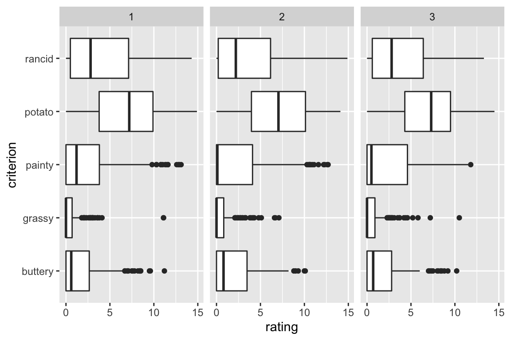
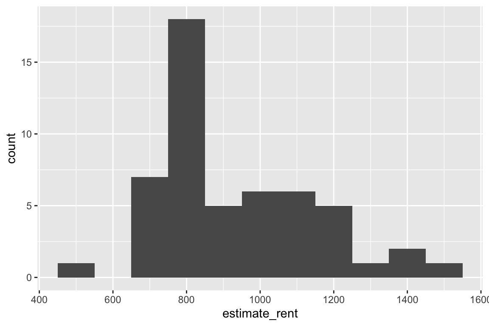
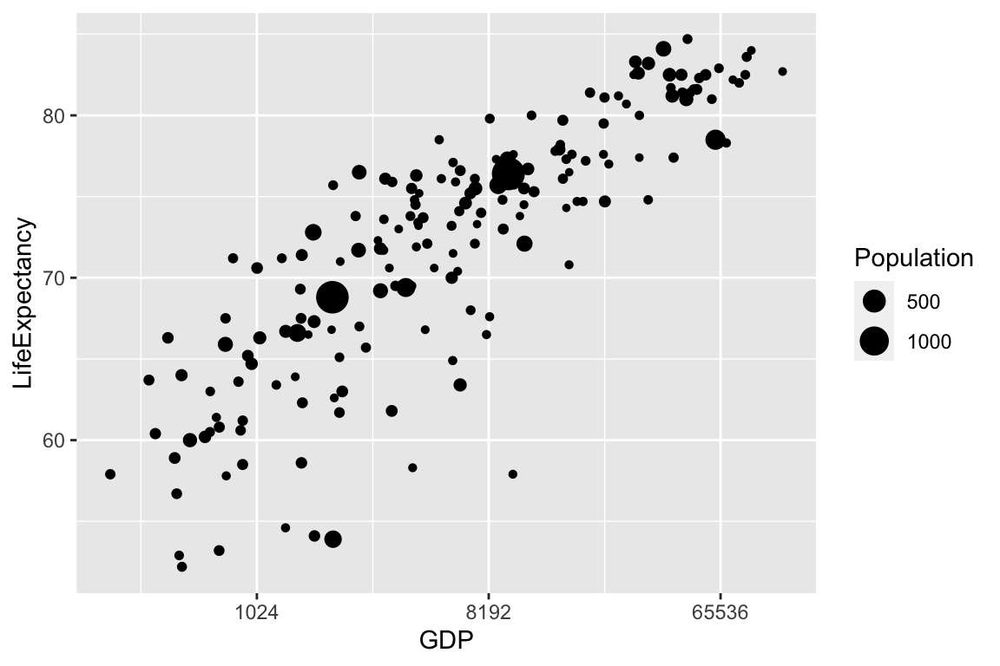
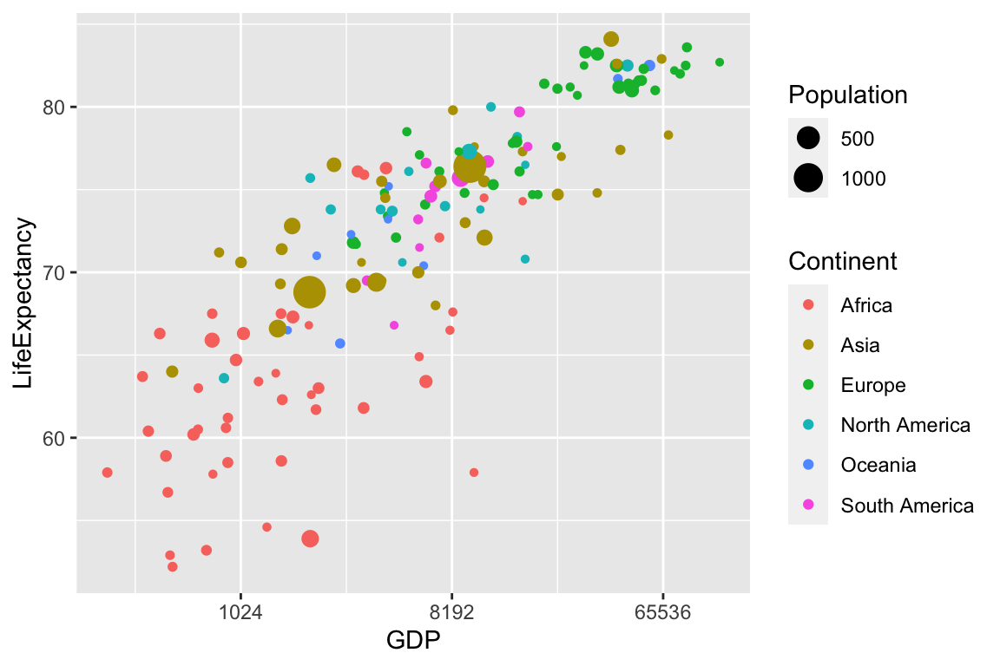
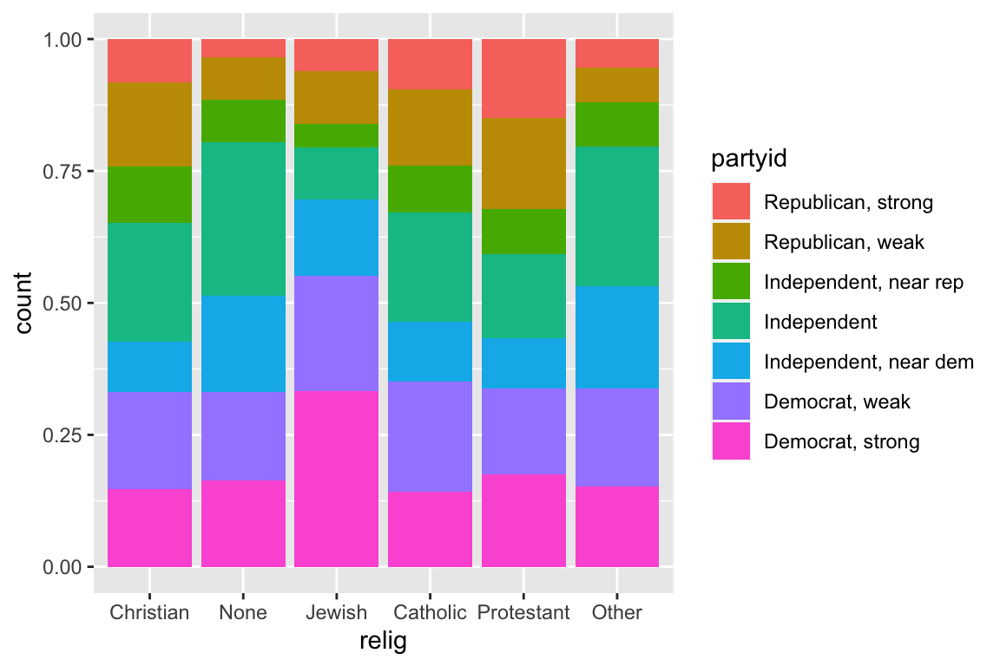
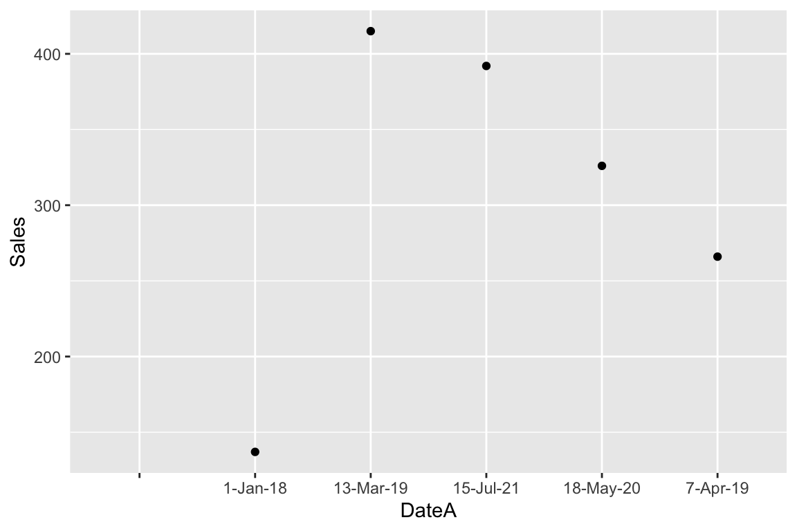
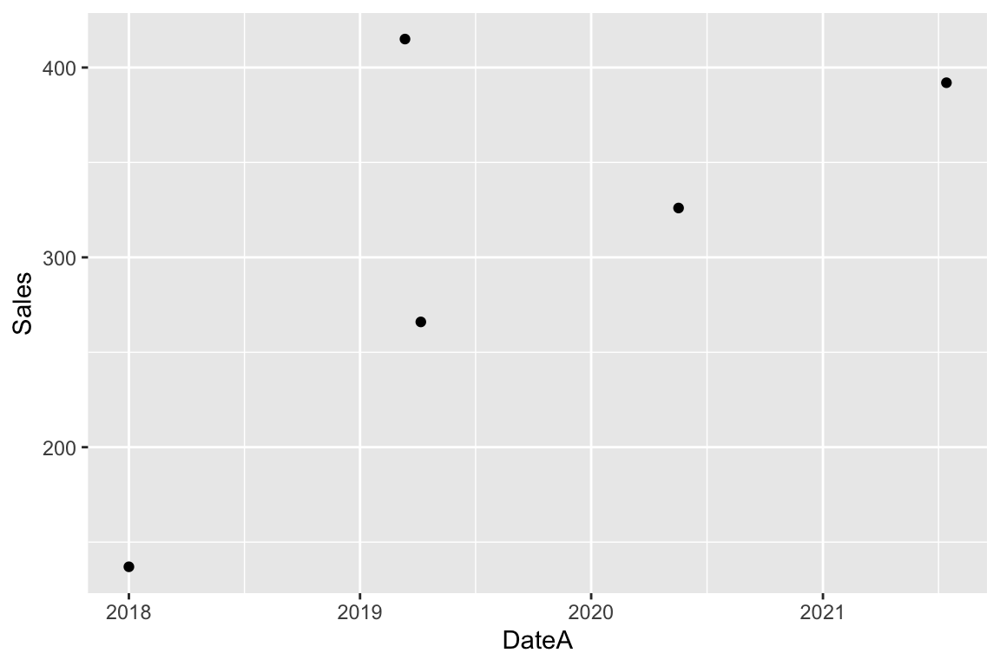
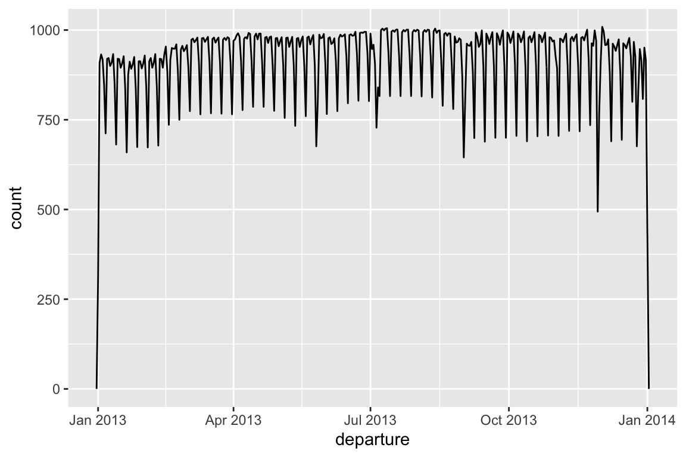
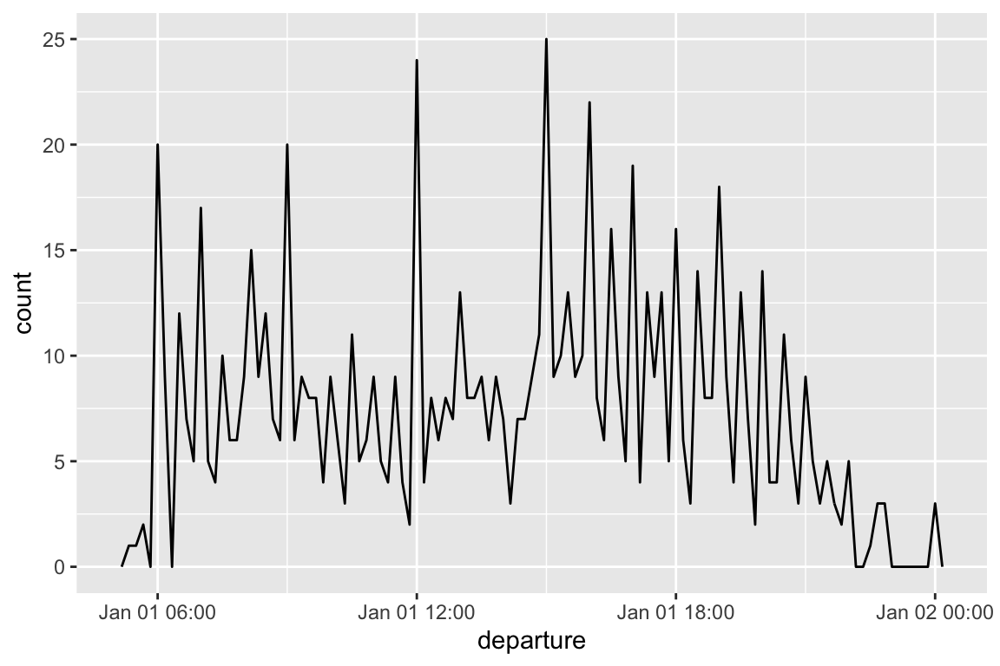

Chapter 2 Data Wrangling
These notes pertain to chapter 5 in Wickham and Grolemund's text. We'll consider data from Major League Baseball, available through the Lahman() package.
library(tidyverse)
library(Lahman)
select <- dplyr::select
summarize <- dplyr::summarizeWe create a tibble with batting records for all MLB players from 1871-2020
batting <- as_tibble(Lahman::Batting)
head(batting)## # A tibble: 6 x 22
## playerID yearID stint teamID lgID G AB R H X2B X3B HR
## <chr> <int> <int> <fct> <fct> <int> <int> <int> <int> <int> <int> <int>
## 1 abercda01 1871 1 TRO NA 1 4 0 0 0 0 0
## 2 addybo01 1871 1 RC1 NA 25 118 30 32 6 0 0
## 3 allisar01 1871 1 CL1 NA 29 137 28 40 4 5 0
## 4 allisdo01 1871 1 WS3 NA 27 133 28 44 10 2 2
## 5 ansonca01 1871 1 RC1 NA 25 120 29 39 11 3 0
## 6 armstbo01 1871 1 FW1 NA 12 49 9 11 2 1 0
## # … with 10 more variables: RBI <int>, SB <int>, CS <int>, BB <int>, SO <int>,
## # IBB <int>, HBP <int>, SH <int>, SF <int>, GIDP <int>tail(batting)## # A tibble: 6 x 22
## playerID yearID stint teamID lgID G AB R H X2B X3B HR
## <chr> <int> <int> <fct> <fct> <int> <int> <int> <int> <int> <int> <int>
## 1 zimmebr01 2020 1 CLE AL 20 37 3 6 0 0 1
## 2 zimmebr02 2020 1 BAL AL 2 0 0 0 0 0 0
## 3 zimmejo02 2020 1 DET AL 3 0 0 0 0 0 0
## 4 zimmeky01 2020 1 KCA AL 16 0 0 0 0 0 0
## 5 zuberty01 2020 1 KCA AL 23 0 0 0 0 0 0
## 6 zuninmi01 2020 1 TBA AL 28 75 8 11 4 0 4
## # … with 10 more variables: RBI <int>, SB <int>, CS <int>, BB <int>, SO <int>,
## # IBB <int>, HBP <int>, SH <int>, SF <int>, GIDP <int>summary(batting)## playerID yearID stint teamID lgID
## Length:108789 Min. :1871 Min. :1.000 CHN : 5060 AA: 1893
## Class :character 1st Qu.:1937 1st Qu.:1.000 PHI : 4971 AL:50133
## Mode :character Median :1976 Median :1.000 PIT : 4920 FL: 472
## Mean :1967 Mean :1.079 SLN : 4853 NA: 737
## 3rd Qu.:2001 3rd Qu.:1.000 CIN : 4731 NL:55071
## Max. :2020 Max. :5.000 CLE : 4683 PL: 149
## (Other):79571 UA: 334
## G AB R H
## Min. : 1.00 Min. : 0.0 Min. : 0.00 Min. : 0.00
## 1st Qu.: 12.00 1st Qu.: 4.0 1st Qu.: 0.00 1st Qu.: 0.00
## Median : 34.00 Median : 46.0 Median : 4.00 Median : 8.00
## Mean : 50.74 Mean :139.2 Mean : 18.48 Mean : 36.39
## 3rd Qu.: 79.00 3rd Qu.:224.0 3rd Qu.: 27.00 3rd Qu.: 56.00
## Max. :165.00 Max. :716.0 Max. :198.00 Max. :262.00
##
## X2B X3B HR RBI
## Min. : 0.000 Min. : 0.000 Min. : 0.00 Min. : 0.00
## 1st Qu.: 0.000 1st Qu.: 0.000 1st Qu.: 0.00 1st Qu.: 0.00
## Median : 1.000 Median : 0.000 Median : 0.00 Median : 3.00
## Mean : 6.202 Mean : 1.247 Mean : 2.85 Mean : 16.79
## 3rd Qu.: 9.000 3rd Qu.: 1.000 3rd Qu.: 2.00 3rd Qu.: 24.00
## Max. :67.000 Max. :36.000 Max. :73.00 Max. :191.00
## NA's :756
## SB CS BB SO
## Min. : 0.000 Min. : 0.000 Min. : 0.00 Min. : 0.00
## 1st Qu.: 0.000 1st Qu.: 0.000 1st Qu.: 0.00 1st Qu.: 1.00
## Median : 0.000 Median : 0.000 Median : 2.00 Median : 9.00
## Mean : 2.919 Mean : 1.177 Mean : 12.84 Mean : 20.56
## 3rd Qu.: 2.000 3rd Qu.: 1.000 3rd Qu.: 18.00 3rd Qu.: 29.00
## Max. :138.000 Max. :42.000 Max. :232.00 Max. :223.00
## NA's :2368 NA's :23541 NA's :2100
## IBB HBP SH SF
## Min. : 0.00 Min. : 0.000 Min. : 0.000 Min. : 0.00
## 1st Qu.: 0.00 1st Qu.: 0.000 1st Qu.: 0.000 1st Qu.: 0.00
## Median : 0.00 Median : 0.000 Median : 0.000 Median : 0.00
## Mean : 1.06 Mean : 1.058 Mean : 2.197 Mean : 1.02
## 3rd Qu.: 1.00 3rd Qu.: 1.000 3rd Qu.: 3.000 3rd Qu.: 1.00
## Max. :120.00 Max. :51.000 Max. :67.000 Max. :19.00
## NA's :36650 NA's :2816 NA's :6068 NA's :36103
## GIDP
## Min. : 0.000
## 1st Qu.: 0.000
## Median : 0.000
## Mean : 2.893
## 3rd Qu.: 4.000
## Max. :36.000
## NA's :25441dim(batting)## [1] 108789 222.1 Filtering and Arranging Data, and Selecting Columns
The filter() command narrows a dataset to rows that meet a specified condition.
The arrange() command sorts a dataset according to a specified ordering.
The select() command narrows a dataset to a specified set of columns
These commands are part of the dplyr R package, which itself is part of tidyverse.
Example 2.1.1
Using the baseball data, create a tibble with only data from the most recent season available (2020).
batting2020 <- batting %>% filter(yearID == 2020)
head(batting2020)## # A tibble: 6 x 22
## playerID yearID stint teamID lgID G AB R H X2B X3B HR
## <chr> <int> <int> <fct> <fct> <int> <int> <int> <int> <int> <int> <int>
## 1 abreual01 2020 1 NYA AL 2 0 0 0 0 0 0
## 2 abreubr01 2020 1 HOU AL 4 0 0 0 0 0 0
## 3 abreujo02 2020 1 CHA AL 60 240 43 76 15 0 19
## 4 acunaro01 2020 1 ATL NL 46 160 46 40 11 0 14
## 5 adamewi01 2020 1 TBA AL 54 185 29 48 15 1 8
## 6 adamja01 2020 1 CHN NL 13 0 0 0 0 0 0
## # … with 10 more variables: RBI <int>, SB <int>, CS <int>, BB <int>, SO <int>,
## # IBB <int>, HBP <int>, SH <int>, SF <int>, GIDP <int>An equivalent way to do this is:
batting2020 <- filter(batting, yearID == 2020)
head(batting2020)## # A tibble: 6 x 22
## playerID yearID stint teamID lgID G AB R H X2B X3B HR
## <chr> <int> <int> <fct> <fct> <int> <int> <int> <int> <int> <int> <int>
## 1 abreual01 2020 1 NYA AL 2 0 0 0 0 0 0
## 2 abreubr01 2020 1 HOU AL 4 0 0 0 0 0 0
## 3 abreujo02 2020 1 CHA AL 60 240 43 76 15 0 19
## 4 acunaro01 2020 1 ATL NL 46 160 46 40 11 0 14
## 5 adamewi01 2020 1 TBA AL 54 185 29 48 15 1 8
## 6 adamja01 2020 1 CHN NL 13 0 0 0 0 0 0
## # … with 10 more variables: RBI <int>, SB <int>, CS <int>, BB <int>, SO <int>,
## # IBB <int>, HBP <int>, SH <int>, SF <int>, GIDP <int>We'll use the first way, though. The %>% operator (called pipe) has advantages and makes coding more convenient when stringing together multiple operations.
Example 2.1.2
Create a tibble including only players who played for teams currently in the National League Central division: Milwaukee (MIL), Chicago Cubs (CHN), Pittsburgh (PIT), Cincinnati (CIN), and St. Louis (SLN).
batting_NLCentral <- batting %>% filter(teamID %in% c("MIL", "CHN", "PIT", "CIN", "SNL"))
head(batting_NLCentral)## # A tibble: 6 x 22
## playerID yearID stint teamID lgID G AB R H X2B X3B HR
## <chr> <int> <int> <fct> <fct> <int> <int> <int> <int> <int> <int> <int>
## 1 addybo01 1876 1 CHN NL 32 142 36 40 4 1 0
## 2 andrufr01 1876 1 CHN NL 8 36 6 11 3 0 0
## 3 ansonca01 1876 1 CHN NL 66 309 63 110 9 7 2
## 4 barnero01 1876 1 CHN NL 66 322 126 138 21 14 1
## 5 bielaos01 1876 1 CHN NL 32 139 24 29 3 0 0
## 6 glennjo01 1876 1 CHN NL 66 276 55 84 9 2 0
## # … with 10 more variables: RBI <int>, SB <int>, CS <int>, BB <int>, SO <int>,
## # IBB <int>, HBP <int>, SH <int>, SF <int>, GIDP <int>Example 2.1.3
Order the entire baseball tibble from most homeruns to fewest.
Note: we use desc() to sort in descending order. To sort in ascending order, simply put the name of the variable, i.e. HR.
batting %>% arrange(desc(HR))## # A tibble: 108,789 x 22
## playerID yearID stint teamID lgID G AB R H X2B X3B HR
## <chr> <int> <int> <fct> <fct> <int> <int> <int> <int> <int> <int> <int>
## 1 bondsba01 2001 1 SFN NL 153 476 129 156 32 2 73
## 2 mcgwima01 1998 1 SLN NL 155 509 130 152 21 0 70
## 3 sosasa01 1998 1 CHN NL 159 643 134 198 20 0 66
## 4 mcgwima01 1999 1 SLN NL 153 521 118 145 21 1 65
## 5 sosasa01 2001 1 CHN NL 160 577 146 189 34 5 64
## 6 sosasa01 1999 1 CHN NL 162 625 114 180 24 2 63
## 7 marisro01 1961 1 NYA AL 161 590 132 159 16 4 61
## 8 ruthba01 1927 1 NYA AL 151 540 158 192 29 8 60
## 9 ruthba01 1921 1 NYA AL 152 540 177 204 44 16 59
## 10 stantmi03 2017 1 MIA NL 159 597 123 168 32 0 59
## # … with 108,779 more rows, and 10 more variables: RBI <int>, SB <int>,
## # CS <int>, BB <int>, SO <int>, IBB <int>, HBP <int>, SH <int>, SF <int>,
## # GIDP <int>Example 2.1.4
Create a tibble that contains only the columns playerID, yearID, teamID, AB, H, and HR.
batting1 <- batting %>% select(playerID, yearID, teamID, AB, H, HR)
head(batting1)## # A tibble: 6 x 6
## playerID yearID teamID AB H HR
## <chr> <int> <fct> <int> <int> <int>
## 1 abercda01 1871 TRO 4 0 0
## 2 addybo01 1871 RC1 118 32 0
## 3 allisar01 1871 CL1 137 40 0
## 4 allisdo01 1871 WS3 133 44 2
## 5 ansonca01 1871 RC1 120 39 0
## 6 armstbo01 1871 FW1 49 11 0Example 2.1.5
The %>% (pipe) operator allows us to string together multiple commands.
Create a tibble including only players who batted at least 500 times in a season and played for Milwaukee (MIL) during or after the 2000 season. Include the columns playerID, yearID, and RBI, and order the players by most RBI to fewest.
batting_MIL <- batting %>% filter(teamID == "MIL" & yearID >= 2000) %>%
select(playerID, yearID, RBI) %>%
arrange(desc(RBI))
head(batting_MIL)## # A tibble: 6 x 3
## playerID yearID RBI
## <chr> <int> <int>
## 1 fieldpr01 2009 141
## 2 sexsori01 2001 125
## 3 sexsori01 2003 124
## 4 fieldpr01 2011 120
## 5 fieldpr01 2007 119
## 6 leeca01 2005 114Practice 2.1.6
Create a subset of the data that includes only players who played in the American League (AL) after 1950.
#Type code herePractice 2.1.7
Create a tibble containing all players, but only the variables playerID, yearID, "G", "H", and "HR".
#Type code herePractice 2.1.8
Order the rows from most hits in a season to fewest.
#Type code hereExample 2.1.9 Multiple Logicals
The current Washington Nationals franchise previously played in Montreal from 1969-2004, and was known as the Expos. Create a dataset containing statistics for this franchise, including both its time in Montreal, and Washington. Arrange in descending order by number of homeruns.
batting_MON_WAS <- batting %>% filter( (teamID=="MON" & yearID >= 1969 & yearID <= 2004)
| (teamID=="WAS" & yearID >= 2005)) %>% arrange(desc(HR))
batting_MON_WAS## # A tibble: 2,242 x 22
## playerID yearID stint teamID lgID G AB R H X2B X3B HR
## <chr> <int> <int> <fct> <fct> <int> <int> <int> <int> <int> <int> <int>
## 1 soriaal01 2006 1 WAS NL 159 647 119 179 41 2 46
## 2 guerrvl01 2000 1 MON NL 154 571 101 197 28 11 44
## 3 guerrvl01 1999 1 MON NL 160 610 102 193 37 5 42
## 4 harpebr03 2015 1 WAS NL 153 521 118 172 38 1 42
## 5 guerrvl01 2002 1 MON NL 161 614 106 206 37 2 39
## 6 guerrvl01 1998 1 MON NL 159 623 108 202 37 7 38
## 7 dunnad01 2009 1 WAS NL 159 546 81 146 29 0 38
## 8 dunnad01 2010 1 WAS NL 158 558 85 145 36 2 38
## 9 rodrihe02 1996 1 MON NL 145 532 81 147 42 1 36
## 10 zimmery01 2017 1 WAS NL 144 524 90 159 33 0 36
## # … with 2,232 more rows, and 10 more variables: RBI <int>, SB <int>, CS <int>,
## # BB <int>, SO <int>, IBB <int>, HBP <int>, SH <int>, SF <int>, GIDP <int>head(batting_MON_WAS)## # A tibble: 6 x 22
## playerID yearID stint teamID lgID G AB R H X2B X3B HR
## <chr> <int> <int> <fct> <fct> <int> <int> <int> <int> <int> <int> <int>
## 1 soriaal01 2006 1 WAS NL 159 647 119 179 41 2 46
## 2 guerrvl01 2000 1 MON NL 154 571 101 197 28 11 44
## 3 guerrvl01 1999 1 MON NL 160 610 102 193 37 5 42
## 4 harpebr03 2015 1 WAS NL 153 521 118 172 38 1 42
## 5 guerrvl01 2002 1 MON NL 161 614 106 206 37 2 39
## 6 guerrvl01 1998 1 MON NL 159 623 108 202 37 7 38
## # … with 10 more variables: RBI <int>, SB <int>, CS <int>, BB <int>, SO <int>,
## # IBB <int>, HBP <int>, SH <int>, SF <int>, GIDP <int>tail(batting_MON_WAS)## # A tibble: 6 x 22
## playerID yearID stint teamID lgID G AB R H X2B X3B HR
## <chr> <int> <int> <fct> <fct> <int> <int> <int> <int> <int> <int> <int>
## 1 romerse01 2020 1 WAS NL 3 0 0 0 0 0 0
## 2 sanchan01 2020 1 WAS NL 11 0 0 0 0 0 0
## 3 scherma01 2020 1 WAS NL 12 0 0 0 0 0 0
## 4 strasst01 2020 1 WAS NL 2 0 0 0 0 0 0
## 5 suerowa01 2020 1 WAS NL 22 0 0 0 0 0 0
## 6 vothau01 2020 1 WAS NL 11 0 0 0 0 0 0
## # … with 10 more variables: RBI <int>, SB <int>, CS <int>, BB <int>, SO <int>,
## # IBB <int>, HBP <int>, SH <int>, SF <int>, GIDP <int>Example 2.1.10: Dealing with NA's
For some batters, stolen base data (SB) were not available. Filter the dataset to only include rows for which stolen base data were available.
The is.na() command returns TRUE/FALSE depending on whether the value is missing(NA). Here we use the negation operator !, since we want the rows that are not na's.
battingSB <- batting %>% filter(!is.na(SB))dim(battingSB)## [1] 106421 22dim(batting)## [1] 108789 22Practice 2.1.11
Create a tibble that contains only players who played in every one of their team's games in a season. Only consider seasons from 1904 on, since season length was highly variable prior to 1904.
Note that beginning in 1904, teams played 154 games per season. In 1961, the American League (AL) expanded to 162 games. The National League expanded to 162 games in 1962. From 1962-2019, teams played 162 games per season. In 2020, teams only played 60 games, due to covid-19.
# Enter code herePractice 2.1.12
Create a tibble that contains only players who played for Milwaukee in 2020, but contains statistics from all years in these player's careers, whether or not they played for Milwaukee.
For example since Christian Yelich played for Milwaukee in 2020, all of his seasons should be included in the dataset, including 2013-2017, when he did not play for Milwaukee.
Include the variables playerID, yearID, teamID, AB, H, and HR, and order the dataframe in descending order by homeruns (HR).
#Enter code here2.2 Mutating, Summarizing, and Grouping Data
The mutate and transmute functions allow us to create new variables in a dataset from old ones.
Example 2.2.1
A player's batting average is defined as number of hits (H) divided by number of at-bats (AB).
A player's on-base percentage is defined as number of hits (H), walks (BB), times hit by pitch (HBP), divided by number of at-bats, walks, times hit by pitch, and sacrifice flies (SF).
A player's slugging percentage is defined as singles + 2doubles (X2B) + 3 triples (X3B) + 4 homeruns (HR) divided by number of at-bats.
We'll create each of these variables. Note that since singles is not a variable in the dataset, we'll create it by subtracting doubles, triples, and homeruns from hits.
batting %>% mutate(AVG = H / AB,
OBP = (H + BB + HBP) / (AB + BB + HBP +SF),
X1B = H - X2B - X3B - HR,
SLG = (X1B + 2*X2B + 3*X3B + 4* HR) / AB) %>%
select(playerID, yearID, teamID, AB, H, HR, BB, HBP, SF, AVG, OBP, SLG)## # A tibble: 108,789 x 12
## playerID yearID teamID AB H HR BB HBP SF AVG OBP SLG
## <chr> <int> <fct> <int> <int> <int> <int> <int> <int> <dbl> <dbl> <dbl>
## 1 abercda01 1871 TRO 4 0 0 0 NA NA 0 NA 0
## 2 addybo01 1871 RC1 118 32 0 4 NA NA 0.271 NA 0.322
## 3 allisar01 1871 CL1 137 40 0 2 NA NA 0.292 NA 0.394
## 4 allisdo01 1871 WS3 133 44 2 0 NA NA 0.331 NA 0.481
## 5 ansonca01 1871 RC1 120 39 0 2 NA NA 0.325 NA 0.467
## 6 armstbo01 1871 FW1 49 11 0 0 NA NA 0.224 NA 0.306
## 7 barkeal01 1871 RC1 4 1 0 1 NA NA 0.25 NA 0.25
## 8 barnero01 1871 BS1 157 63 0 13 NA NA 0.401 NA 0.580
## 9 barrebi01 1871 FW1 5 1 0 0 NA NA 0.2 NA 0.4
## 10 barrofr01 1871 BS1 86 13 0 0 NA NA 0.151 NA 0.198
## # … with 108,779 more rowsWhile mutate displays all variables in the dataset, transmute displays only the ones created.
batting %>% transmute(AVG = H / AB,
OBP = (H + BB + HBP) / (AB + BB + HBP +SF),
X1B = H - X2B - X3B - HR,
SLG = (X1B + 2*X2B + 3*X3B + 4* HR) / AB) ## # A tibble: 108,789 x 4
## AVG OBP X1B SLG
## <dbl> <dbl> <int> <dbl>
## 1 0 NA 0 0
## 2 0.271 NA 26 0.322
## 3 0.292 NA 31 0.394
## 4 0.331 NA 30 0.481
## 5 0.325 NA 25 0.467
## 6 0.224 NA 8 0.306
## 7 0.25 NA 1 0.25
## 8 0.401 NA 44 0.580
## 9 0.2 NA 0 0.4
## 10 0.151 NA 10 0.198
## # … with 108,779 more rowsExample 2.2.2
Create a new variable that indicates whether or not a player played for a team currently in the National League Central Division (MIL, CIN, CHN, CIN, PIT).
batting %>% mutate(NLCentral = ifelse(teamID %in%c("MIL", "CIN", "CHN", "CIN", "PIT"), "Yes", "No")) %>%
select(playerID, yearID, teamID, NLCentral)## # A tibble: 108,789 x 4
## playerID yearID teamID NLCentral
## <chr> <int> <fct> <chr>
## 1 abercda01 1871 TRO No
## 2 addybo01 1871 RC1 No
## 3 allisar01 1871 CL1 No
## 4 allisdo01 1871 WS3 No
## 5 ansonca01 1871 RC1 No
## 6 armstbo01 1871 FW1 No
## 7 barkeal01 1871 RC1 No
## 8 barnero01 1871 BS1 No
## 9 barrebi01 1871 FW1 No
## 10 barrofr01 1871 BS1 No
## # … with 108,779 more rows2.2.1 Summarize
The summarize command calculates summary statistics for all variables in the dataset.
The n() command returns the number of rows included in the summary.
Example 2.2.3
Calculate the minimum, maximum, mean, median, and upper and lower quartiles for number stolen bases
batting %>% summarize(min_SB = min(SB),
Q1_SB = quantile(SB, 0.25),
median_SB = median(SB),
Q3_SB = quantile(SB, 0.75),
max_SB = max(SB),
mean_SB =mean(SB),
Number = n())## Error: Problem with `summarise()` input `Q1_SB`.
## x missing values and NaN's not allowed if 'na.rm' is FALSE
## ℹ Input `Q1_SB` is `quantile(SB, 0.25)`.The quantities we desire cannot be calculated some players have missing values. We tell R to ignore missing values using the argument na.rm=TRUE.
batting %>% summarize(min_SB = min(SB, na.rm=TRUE),
Q1_SB = quantile(SB, 0.25, na.rm=TRUE),
median_SB = median(SB, na.rm=TRUE),
Q3_SB = quantile(SB, 0.75, na.rm=TRUE),
max_SB = max(SB, na.rm=TRUE),
mean_SB =mean(SB, na.rm=TRUE),
Number = sum(!is.na(SB)))## # A tibble: 1 x 7
## min_SB Q1_SB median_SB Q3_SB max_SB mean_SB Number
## <int> <dbl> <int> <dbl> <int> <dbl> <int>
## 1 0 0 0 2 138 2.92 106421Practice 2.2.4
Create a variable to calculate each player's stolen base success proportion (SB/(SB+CS)).
#Enter Code HerePractice 2.2.5
Calculate the minimum, maximum, mean, median, and upper and lower quartiles for humber hits. Also give the total number of players in the dataset.
#Enter Code HereExample 2.2.6
While overall summaries are sometimes useful, often it is far more useful to summarize by group. The group_by command allows us to calculate summary statistics broken down by group.
Calculate the number of homeruns (HR), hits (H), and at-bats (AB) for by each team, throughout baseball history.
When grouping, n() returns the number of observations in each group.
batting %>% group_by(teamID) %>%
summarize(HR = sum(HR),
H= sum(H),
AB= sum(AB),
Total_Player_Seasons = n()
) %>%
arrange(desc(HR))## # A tibble: 149 x 5
## teamID HR H AB Total_Player_Seasons
## <fct> <int> <int> <int> <int>
## 1 NYA 16309 166924 626513 4471
## 2 CHN 14449 194194 739897 5060
## 3 DET 13904 169123 637722 4413
## 4 BOS 13793 170584 638385 4515
## 5 PHI 13321 187367 718794 4971
## 6 CIN 13255 179875 688343 4731
## 7 CLE 13228 168997 636579 4683
## 8 SLN 12046 181892 682991 4853
## 9 CHA 11606 164533 632007 4476
## 10 PIT 11564 187060 706152 4920
## # … with 139 more rowsWhile we might be interested in knowing the number of total player seasons for each team, it might be more interesting to know the number of different batters who have played for each team. We can accomplish this using the unique() function. The command unique(playerID) creates a vector of unique player ID's for each team. The length() command returns the length of each vector (i.e. number of different batters).
batting %>% group_by(teamID) %>%
summarize(HR = sum(HR),
H= sum(H),
AB= sum(AB),
Total_Batters = length(unique(playerID))
) %>%
arrange(desc(HR))## # A tibble: 149 x 5
## teamID HR H AB Total_Batters
## <fct> <int> <int> <int> <int>
## 1 NYA 16309 166924 626513 1709
## 2 CHN 14449 194194 739897 2117
## 3 DET 13904 169123 637722 1718
## 4 BOS 13793 170584 638385 1838
## 5 PHI 13321 187367 718794 2103
## 6 CIN 13255 179875 688343 1977
## 7 CLE 13228 168997 636579 1917
## 8 SLN 12046 181892 682991 2024
## 9 CHA 11606 164533 632007 1807
## 10 PIT 11564 187060 706152 1945
## # … with 139 more rowsExample 2.2.7
Calculate each team's all-time batting average. Include only teams with at least 100,000 at-bats. Sort by batting average.
batting %>% group_by(teamID) %>%
summarize(HR = sum(HR),
H= sum(H),
AB= sum(AB),
Total_Batters = length(unique(playerID)),
AVG = H / AB
) %>%
filter(AB > 100000) %>%
arrange(desc(AVG))## # A tibble: 39 x 6
## teamID HR H AB Total_Batters AVG
## <fct> <int> <int> <int> <int> <dbl>
## 1 COL 5013 41243 150606 593 0.274
## 2 NY1 5776 103368 381156 894 0.271
## 3 BOS 13793 170584 638385 1838 0.267
## 4 BRO 4338 93508 350213 875 0.267
## 5 NYA 16309 166924 626513 1709 0.266
## 6 SLN 12046 181892 682991 2024 0.266
## 7 PHA 3502 74209 278843 783 0.266
## 8 CLE 13228 168997 636579 1917 0.265
## 9 DET 13904 169123 637722 1718 0.265
## 10 PIT 11564 187060 706152 1945 0.265
## # … with 29 more rowsExample 2.2.8
Some of these teams do not exist anymore, while others came about more recently. Let's include the earliest and latest year that each team played.
batting %>% group_by(teamID) %>%
summarize(HR = sum(HR),
H= sum(H),
AB= sum(AB),
Total_Batters = length(unique(playerID)),
AVG = H / AB,
First_Year = min(yearID),
Last_Year = max(yearID)
) %>%
filter(AB > 100000) %>%
arrange(desc(AVG))## # A tibble: 39 x 8
## teamID HR H AB Total_Batters AVG First_Year Last_Year
## <fct> <int> <int> <int> <int> <dbl> <int> <int>
## 1 COL 5013 41243 150606 593 0.274 1993 2020
## 2 NY1 5776 103368 381156 894 0.271 1883 1957
## 3 BOS 13793 170584 638385 1838 0.267 1901 2020
## 4 BRO 4338 93508 350213 875 0.267 1890 1957
## 5 NYA 16309 166924 626513 1709 0.266 1903 2020
## 6 SLN 12046 181892 682991 2024 0.266 1892 2020
## 7 PHA 3502 74209 278843 783 0.266 1901 1954
## 8 CLE 13228 168997 636579 1917 0.265 1901 2020
## 9 DET 13904 169123 637722 1718 0.265 1901 2020
## 10 PIT 11564 187060 706152 1945 0.265 1887 2020
## # … with 29 more rowsExample 2.2.9
We can group by more than one variable. Let's calculate the number of hits, homeruns, and at-bats, and batting average for each team in each season.
batting %>% group_by(teamID, yearID) %>%
summarize(HR = sum(HR),
H= sum(H),
AB= sum(AB),
AVG = H / AB
) %>%
arrange(desc(HR))## # A tibble: 2,955 x 6
## # Groups: teamID [149]
## teamID yearID HR H AB AVG
## <fct> <int> <int> <int> <int> <dbl>
## 1 MIN 2019 307 1547 5732 0.270
## 2 NYA 2019 306 1493 5583 0.267
## 3 HOU 2019 288 1538 5613 0.274
## 4 LAN 2019 279 1414 5493 0.257
## 5 NYA 2018 267 1374 5515 0.249
## 6 SEA 1997 264 1574 5614 0.280
## 7 TEX 2005 260 1528 5716 0.267
## 8 BAL 1996 257 1557 5689 0.274
## 9 OAK 2019 257 1384 5561 0.249
## 10 TOR 2010 257 1364 5495 0.248
## # … with 2,945 more rowsPractice 2.2.10
Calculate the total number of at-bats (AB), hits (H), and homeruns (HR) for each player throughout their career. Also calculate their career batting average (H / AB). Sort the dataset from most hits to fewest.
#Enter Code HerePractice 2.2.11
Calculate the total number of records (rows) for each player in the dataset. Order from most to least. Also include the player's first and last season. Note that some players played non-consecutive seasons, so the number of records will not necessarily equal the difference between the first and last seasons.
#Enter Code HerePractice 2.2.12
The total number of records for each player is not quite equal to their total number of seasons played, since players sometimes play for more than one team in a season. Calculate the total number of seasons played by each player.
#Enter Code HerePractice 2.2.13
Calculate the average number of stolen bases and homeruns per team for each year since 1871. For example, the average number of homeruns per team was 226.
#Enter Code HerePlot the average number of homeruns and stolen bases against year.
#Enter Code Here#Enter Code Here2.3 Tidy Data
Data are stored in many different forms. Some are easier to work with than others. Packages in tidyverse (gglot2, dplyr, etc.) are designed to work with tidy data. This means:
- Each variable must have its own column.
- Each observation must have its own row.
- Each value must have its own cell.
Note that any two of these imply the third.
Since data often come in non-tidy form, we often need to reshape our data before creating graphs or calculating summary statistics. Often, we see either:
- one variable spread across multiple columns OR
- one observation spread across multiple rows
Such data can be reshaped into tidy form using the pivot_longer() or pivot_wider() commands.
Example 2.3.1: pivot_longer()
We consider a dataset containing results from a 10 week sensory experiment on french fries, conducted at Iowa State University in 2004.
- 12 individuals were asked to assess the taste of french fries according to how they taste with respect to five different criteria:
- potato-y
- buttery
- grassy
- rancid
- paint-y
- potato-y
- fries were fried in 1 of 3 different oils (treatment). Each week, individuals tasted and assessed six batches of fries (all three oils, replicated twice)
Fries <- read_csv("https://raw.githubusercontent.com/AndrewjSage/andrewjsage.github.io/master/Datasets/frenchfries.csv")
Fries## # A tibble: 696 x 9
## time treatment subject rep potato buttery grassy rancid painty
## <dbl> <dbl> <dbl> <dbl> <dbl> <dbl> <dbl> <dbl> <dbl>
## 1 1 1 3 1 2.9 0 0 0 5.5
## 2 1 1 3 2 14 0 0 1.1 0
## 3 1 1 10 1 11 6.4 0 0 0
## 4 1 1 10 2 9.9 5.9 2.9 2.2 0
## 5 1 1 15 1 1.2 0.1 0 1.1 5.1
## 6 1 1 15 2 8.8 3 3.6 1.5 2.3
## 7 1 1 16 1 9 2.6 0.4 0.1 0.2
## 8 1 1 16 2 8.2 4.4 0.3 1.4 4
## 9 1 1 19 1 7 3.2 0 4.9 3.2
## 10 1 1 19 2 13 0 3.1 4.3 10.3
## # … with 686 more rows- Suppose we want to create a boxplot displaying ratings for each of the five critera, while faceting by type of oil (
treatment). Can we do this with the data in its current format? Why or why not?
Note that in format 1, the column names potato, buttery, grassy, rancid, painty are not names of variables, but rather categories (or levels) of the variable criterion. Thus, each row represents 5 observations, not 1.
The pivot_longer() command converts a "wide" dataset like format 1 into a "longer" tidy form.
Fries_tidy <- Fries %>% pivot_longer(cols = c("potato", "buttery", "grassy", "rancid", "painty"),
names_to = "criterion", values_to="rating")colsspecifies the columns whose names should be made into the values, or levels of a single variable.
names_tospecifies the name of the variable to be made out of the column names.
values_tospecifies the name of the variable that will contain the values in these columns of the dataset. (Note that quotes are required when creating variables whose names do not exist in the original dataset.)
head(Fries_tidy)## # A tibble: 6 x 6
## time treatment subject rep criterion rating
## <dbl> <dbl> <dbl> <dbl> <chr> <dbl>
## 1 1 1 3 1 potato 2.9
## 2 1 1 3 1 buttery 0
## 3 1 1 3 1 grassy 0
## 4 1 1 3 1 rancid 0
## 5 1 1 3 1 painty 5.5
## 6 1 1 3 2 potato 14Now, we can create the plot we desire.
ggplot(data=Fries_tidy) + geom_boxplot(aes(x=criterion, y=rating)) + facet_grid(~treatment) + coord_flip()
We can save a .csv file containing the new dataset using the write.csv command
write.csv(Fries_tidy, file="Fries_tidy.csv")Example 2.3.2 pivot_wider
This dataset gives the median annual income and median monthly rent in 2017 for each of the 50 US states.
estimate represents the estimated monthly income or rent, and moe represents the margin of error for that estimate.
head(us_rent_income)## # A tibble: 6 x 5
## GEOID NAME variable estimate moe
## <chr> <chr> <chr> <dbl> <dbl>
## 1 01 Alabama income 24476 136
## 2 01 Alabama rent 747 3
## 3 02 Alaska income 32940 508
## 4 02 Alaska rent 1200 13
## 5 04 Arizona income 27517 148
## 6 04 Arizona rent 972 4Why are these data not in tidy form?
What would happen if we tried to create a histogram of annual rent estimates?
We use the pivot_wider() command to reshape these data into tidy form.
us_rent_income_tidy <- us_rent_income %>% pivot_wider(names_from = variable, values_from=c("estimate", "moe"))
head(us_rent_income_tidy)## # A tibble: 6 x 6
## GEOID NAME estimate_income estimate_rent moe_income moe_rent
## <chr> <chr> <dbl> <dbl> <dbl> <dbl>
## 1 01 Alabama 24476 747 136 3
## 2 02 Alaska 32940 1200 508 13
## 3 04 Arizona 27517 972 148 4
## 4 05 Arkansas 23789 709 165 5
## 5 06 California 29454 1358 109 3
## 6 08 Colorado 32401 1125 109 5names_fromspecifies the single column to be spread over multiple columns.values_fromspecifies the variables from which to obtain the values for the new columns
By default, new column names will consist of the old column names and the variables in names_from, separated by a _
ggplot(data = us_rent_income_tidy) +geom_histogram(aes(x=estimate_rent), binwidth=100)
Example 2.3.3 separate() and unite()
Sometimes, we need to split a column into two columns. This can be done using the separate() command. For example, the following dataset has a variable called rate, which gives the ratio of cases of TB in various countries, to the country's population.
Let's create two columns, one with the number of TB cases, and the other with population.
## # A tibble: 6 x 3
## country year rate
## <chr> <int> <chr>
## 1 Afghanistan 1999 745/19987071
## 2 Afghanistan 2000 2666/20595360
## 3 Brazil 1999 37737/172006362
## 4 Brazil 2000 80488/174504898
## 5 China 1999 212258/1272915272
## 6 China 2000 213766/1280428583TBcases_sep <- TBcases %>% separate("rate", into = c("TB_cases", "population"), sep="/")
head(TBcases_sep)## # A tibble: 6 x 4
## country year TB_cases population
## <chr> <int> <chr> <chr>
## 1 Afghanistan 1999 745 19987071
## 2 Afghanistan 2000 2666 20595360
## 3 Brazil 1999 37737 172006362
## 4 Brazil 2000 80488 174504898
## 5 China 1999 212258 1272915272
## 6 China 2000 213766 1280428583Notice that the new columns are listed as character vectors, even though they are numeric. We can tell R to convert the resulting columns using the command convert=TRUE.
TBcases_sep <- TBcases %>% separate("rate", into = c("TB_cases", "population"), sep="/", convert=TRUE)
head(TBcases_sep)## # A tibble: 6 x 4
## country year TB_cases population
## <chr> <int> <int> <int>
## 1 Afghanistan 1999 745 19987071
## 2 Afghanistan 2000 2666 20595360
## 3 Brazil 1999 37737 172006362
## 4 Brazil 2000 80488 174504898
## 5 China 1999 212258 1272915272
## 6 China 2000 213766 1280428583If we want to return to the initial form, we can combine the variables back into one using unite()
TBcases_united <- TBcases_sep %>% unite(col="rate", "TB_cases", "population", sep="/")
head(TBcases_united)## # A tibble: 6 x 3
## country year rate
## <chr> <int> <chr>
## 1 Afghanistan 1999 745/19987071
## 2 Afghanistan 2000 2666/20595360
## 3 Brazil 1999 37737/172006362
## 4 Brazil 2000 80488/174504898
## 5 China 1999 212258/1272915272
## 6 China 2000 213766/1280428583Practice 2.3.4
The GDP growth dataset contains each country's annual GDP growth in each year since 1800. The data are in a format where columns represent years.
GDP_Growth <- read_csv("https://raw.githubusercontent.com/AndrewjSage/andrewjsage.github.io/master/Datasets/gdp_total_yearly_growth.csv")Suppose we wanted to plot a country's GDP growth over time. Why wouldn't we be able to do that with the data in its current form?
Reshape the data into a format with three columns: country, year, and GDP_Growth.
Hint: you can reference all columns between 1801 and 2013, using `c("1801":"2013").
#type code here. You should notice that the year variable is stored as a character. Convert it to an integer using the command:
GDP_Growth <- GDP_Growth %>% mutate(year=as.integer(year))Now plot GPD_Growth by year for Brazil, China, India, the United States, and Vietnam. Use a line graph to connect the points.
#type code hereCreate a .csv file containing the new version of the dataset.
#type code herePractice 2.3.5
The fish_encounters dataset contains data on fish migration along a river. Sensors were setup at multiple stations along the river, and the data show whether the fish was observed at each station. Notice that there are many rows for each fish, corresponding to each station where the fish was observed. If a fish was not observed at a station, then that row is omitted from the dataset.
data("fish_encounters")
head(fish_encounters)## # A tibble: 6 x 3
## fish station seen
## <fct> <fct> <int>
## 1 4842 Release 1
## 2 4842 I80_1 1
## 3 4842 Lisbon 1
## 4 4842 Rstr 1
## 5 4842 Base_TD 1
## 6 4842 BCE 1Reshape the data so that each fish has exactly one row in the data, columns correspond to the different stations, and the entry in the cell correponding to a fish and station has value 1 if the fish was seen at that station. (See illustration.)
# Type code hereIf we add values_fill = 0 in the pivot command, NA's will be replaced with 0's.
Practice 2.3.6
The following code scrapes the Milwaukee Bucks roster from espn.com. We'll learn about how to scrape data from the web later in the term.
library(rvest)
page <- read_html("https://www.espn.com/nba/team/roster/_/name/mil")
table <- page %>%
html_elements("table") %>%
html_table()
Bucks <- table[[1]]
Bucks## # A tibble: 18 x 8
## `` Name POS Age HT WT College Salary
## <lgl> <chr> <chr> <int> <chr> <chr> <chr> <chr>
## 1 NA Grayson Allen7 SG 26 "6' 4\"" 198 lbs Duke $4,054,6…
## 2 NA Giannis Antetokoun… PF 27 "6' 11\… 242 lbs -- $39,344,…
## 3 NA Thanasis Antetokou… SF 29 "6' 6\"" 219 lbs -- $1,669,1…
## 4 NA DeAndre' Bembry95 SG 27 "6' 5\"" 210 lbs Saint Josep… $1,669,1…
## 5 NA Pat Connaughton24 SG 29 "6' 5\"" 209 lbs Notre Dame $5,333,3…
## 6 NA Jeff Dowtin15 PG 24 "6' 3\"" 177 lbs Rhode Island --
## 7 NA Langston Galloway12 SG 30 "6' 1\"" 200 lbs Saint Josep… --
## 8 NA George Hill3 PG 35 "6' 4\"" 188 lbs IUPUI $4,000,0…
## 9 NA Jrue Holiday21 PG 31 "6' 3\"" 205 lbs UCLA $32,413,…
## 10 NA Serge Ibaka25 C 32 "6' 10\… 235 lbs -- $9,720,9…
## 11 NA Brook Lopez11 C 33 "7' 0\"" 282 lbs Stanford $13,302,…
## 12 NA Sandro Mamukelashv… PF 22 "6' 9\"" 240 lbs Seton Hall --
## 13 NA Wesley Matthews23 SG 35 "6' 4\"" 220 lbs Marquette $1,237,4…
## 14 NA Khris Middleton22 SF 30 "6' 7\"" 222 lbs Texas A&M $35,500,…
## 15 NA Greg Monroe15 C 31 "6' 10\… 250 lbs Georgetown --
## 16 NA Jordan Nwora13 SF 23 "6' 8\"" 225 lbs Louisville $1,517,9…
## 17 NA Bobby Portis9 C 27 "6' 10\… 250 lbs Arkansas $4,347,6…
## 18 NA Lindell Wigginton28 G 23 "6' 1\"" 189 lbs Iowa State --Notice that the HT variable includes both feet and inches, separated by the ' symbol.
We'll want to separate the HT variable into two separate numeric variables, FT and IN.
First, we'll remove the " symbol after inches, using the code below. You'll learn more about the str_replace() function soon.
Bucks$HT <- str_replace(Bucks$HT, '"', "")
Bucks## # A tibble: 18 x 8
## `` Name POS Age HT WT College Salary
## <lgl> <chr> <chr> <int> <chr> <chr> <chr> <chr>
## 1 NA Grayson Allen7 SG 26 6' 4 198 lbs Duke $4,054,695
## 2 NA Giannis Antetokounmp… PF 27 6' 11 242 lbs -- $39,344,9…
## 3 NA Thanasis Antetokounm… SF 29 6' 6 219 lbs -- $1,669,178
## 4 NA DeAndre' Bembry95 SG 27 6' 5 210 lbs Saint Josep… $1,669,178
## 5 NA Pat Connaughton24 SG 29 6' 5 209 lbs Notre Dame $5,333,334
## 6 NA Jeff Dowtin15 PG 24 6' 3 177 lbs Rhode Island --
## 7 NA Langston Galloway12 SG 30 6' 1 200 lbs Saint Josep… --
## 8 NA George Hill3 PG 35 6' 4 188 lbs IUPUI $4,000,000
## 9 NA Jrue Holiday21 PG 31 6' 3 205 lbs UCLA $32,413,3…
## 10 NA Serge Ibaka25 C 32 6' 10 235 lbs -- $9,720,900
## 11 NA Brook Lopez11 C 33 7' 0 282 lbs Stanford $13,302,3…
## 12 NA Sandro Mamukelashvil… PF 22 6' 9 240 lbs Seton Hall --
## 13 NA Wesley Matthews23 SG 35 6' 4 220 lbs Marquette $1,237,494
## 14 NA Khris Middleton22 SF 30 6' 7 222 lbs Texas A&M $35,500,0…
## 15 NA Greg Monroe15 C 31 6' 10 250 lbs Georgetown --
## 16 NA Jordan Nwora13 SF 23 6' 8 225 lbs Louisville $1,517,981
## 17 NA Bobby Portis9 C 27 6' 10 250 lbs Arkansas $4,347,600
## 18 NA Lindell Wigginton28 G 23 6' 1 189 lbs Iowa State --Now, separate the HT variable into two variables, called FT and IN. Make sure they are both numeric variables.
#Type code here2.4 Joining Data
Mutating Joins
A mutating join adds new variables to a dataframe by matching observations in another.
library(Lock5Data)
data(AllCountries)
countries <- AllCountriesglimpse(countries)## Rows: 217
## Columns: 26
## $ Country <fct> "Afghanistan", "Albania", "Algeria", "American Samoa", …
## $ Code <fct> AFG, ALB, DZA, ASM, AND, AGO, ATG, ARG, ARM, ABW, AUS, …
## $ LandArea <dbl> 652.860, 27.400, 2381.740, 0.200, 0.470, 1246.700, 0.44…
## $ Population <dbl> 37.172, 2.866, 42.228, 0.055, 0.077, 30.810, 0.096, 44.…
## $ Density <dbl> 56.9, 104.6, 17.7, 277.3, 163.8, 24.7, 218.8, 16.3, 103…
## $ GDP <int> 521, 5254, 4279, NA, 42030, 3432, 16864, 11653, 4212, N…
## $ Rural <dbl> 74.5, 39.7, 27.4, 12.8, 11.9, 34.5, 75.4, 8.1, 36.9, 56…
## $ CO2 <dbl> 0.29, 1.98, 3.74, NA, 5.83, 1.29, 5.74, 4.78, 1.90, 8.4…
## $ PumpPrice <dbl> 0.70, 1.36, 0.28, NA, NA, 0.97, NA, 1.10, 0.77, NA, 0.9…
## $ Military <dbl> 3.72, 4.08, 13.81, NA, NA, 9.40, NA, 2.05, 20.86, NA, 5…
## $ Health <dbl> 2.01, 9.51, 10.73, NA, 14.02, 5.43, 10.76, 13.56, 6.05,…
## $ ArmedForces <int> 323, 9, 317, NA, NA, 117, 0, 105, 49, NA, 58, 21, 82, 1…
## $ Internet <dbl> 11.4, 71.8, 47.7, NA, 98.9, 14.3, 76.0, 75.8, 69.7, 97.…
## $ Cell <dbl> 67.4, 123.7, 111.0, NA, 104.4, 44.7, 180.4, 139.8, 119.…
## $ HIV <dbl> NA, 0.1, 0.1, NA, NA, 1.9, NA, 0.4, 0.2, NA, 0.1, 0.1, …
## $ Hunger <dbl> 30.3, 5.5, 4.7, NA, NA, 23.9, NA, 3.8, 4.3, NA, 2.5, 2.…
## $ Diabetes <dbl> 9.6, 10.1, 6.7, NA, 8.0, 3.9, 13.2, 5.5, 7.1, 11.6, 5.1…
## $ BirthRate <dbl> 32.5, 11.7, 22.3, NA, NA, 41.3, 16.1, 17.0, 13.1, 11.0,…
## $ DeathRate <dbl> 6.6, 7.5, 4.8, NA, NA, 8.4, 5.8, 7.6, 9.7, 8.9, 6.5, 9.…
## $ ElderlyPop <dbl> 2.6, 13.6, 6.4, NA, NA, 2.5, 7.2, 11.3, 11.4, 13.6, 15.…
## $ LifeExpectancy <dbl> 64.0, 78.5, 76.3, NA, NA, 61.8, 76.5, 76.7, 74.8, 76.0,…
## $ FemaleLabor <dbl> 50.3, 55.9, 16.4, NA, NA, 76.4, NA, 57.1, 55.8, NA, 72.…
## $ Unemployment <dbl> 1.5, 13.9, 12.1, NA, NA, 7.3, NA, 9.5, 17.7, NA, 5.4, 4…
## $ Energy <int> NA, 808, 1328, NA, NA, 545, NA, 2030, 1016, NA, 5335, 3…
## $ Electricity <int> NA, 2309, 1363, NA, NA, 312, NA, 3075, 1962, NA, 10071,…
## $ Developed <int> NA, 1, 1, NA, NA, 1, NA, 2, 1, NA, 3, 3, 1, NA, 3, 1, N…head(countries)## Country Code LandArea Population Density GDP Rural CO2 PumpPrice
## 1 Afghanistan AFG 652.86 37.172 56.9 521 74.5 0.29 0.70
## 2 Albania ALB 27.40 2.866 104.6 5254 39.7 1.98 1.36
## 3 Algeria DZA 2381.74 42.228 17.7 4279 27.4 3.74 0.28
## 4 American Samoa ASM 0.20 0.055 277.3 NA 12.8 NA NA
## 5 Andorra AND 0.47 0.077 163.8 42030 11.9 5.83 NA
## 6 Angola AGO 1246.70 30.810 24.7 3432 34.5 1.29 0.97
## Military Health ArmedForces Internet Cell HIV Hunger Diabetes BirthRate
## 1 3.72 2.01 323 11.4 67.4 NA 30.3 9.6 32.5
## 2 4.08 9.51 9 71.8 123.7 0.1 5.5 10.1 11.7
## 3 13.81 10.73 317 47.7 111.0 0.1 4.7 6.7 22.3
## 4 NA NA NA NA NA NA NA NA NA
## 5 NA 14.02 NA 98.9 104.4 NA NA 8.0 NA
## 6 9.40 5.43 117 14.3 44.7 1.9 23.9 3.9 41.3
## DeathRate ElderlyPop LifeExpectancy FemaleLabor Unemployment Energy
## 1 6.6 2.6 64.0 50.3 1.5 NA
## 2 7.5 13.6 78.5 55.9 13.9 808
## 3 4.8 6.4 76.3 16.4 12.1 1328
## 4 NA NA NA NA NA NA
## 5 NA NA NA NA NA NA
## 6 8.4 2.5 61.8 76.4 7.3 545
## Electricity Developed
## 1 NA NA
## 2 2309 1
## 3 1363 1
## 4 NA NA
## 5 NA NA
## 6 312 1Let's graph each country's life expectancy against its GDP, as we saw in the GapMinder graphic.
ggplot(data=countries) + geom_point(aes(y=LifeExpectancy, x=GDP, size=Population)) + scale_x_continuous(trans = 'log2')
We cannot color by continent because continent is not a variable in our dataset. Fortunately, we can find the countries in each continent from another source.
continents <- read_csv("https://raw.githubusercontent.com/dbouquin/IS_608/master/NanosatDB_munging/Countries-Continents.csv")
glimpse(continents)## Rows: 194
## Columns: 2
## $ Continent <chr> "Africa", "Africa", "Africa", "Africa", "Africa", "Africa", …
## $ Country <chr> "Algeria", "Angola", "Benin", "Botswana", "Burkina", "Burund…head(continents)## # A tibble: 6 x 2
## Continent Country
## <chr> <chr>
## 1 Africa Algeria
## 2 Africa Angola
## 3 Africa Benin
## 4 Africa Botswana
## 5 Africa Burkina
## 6 Africa BurundiIn order to join the dataframes together, we need a key. A key is a variable, or set of variables, that uniquely identifies an observation. Keys are used to match observations.
Used to connect two data tables
primary key uniquely identifies an observation in its own table
foreign key uniquely identifies an observation in another table
There are four different kinds of mutating joins in R.
inner_joinmatches pairs of observations when their keys are equal. The new dataframe contains only observations that were contained in both of the original ones.left_joinkeeps all observations from the left (x) table. Those not matched return NA's for the variables in the y-table.right_joinkeeps all observations from the right (y) table. Those not matched return NA's for the variables in the x-table.full_joinkeeps all observations in both tables. Those not matched return NA's for variables in the other table.
Inner

inner join illustration

outer join illustration
Example 2.4.1 Joining countries and continents
- Using
inner_join
countries_inner <- countries %>% inner_join(continents, by="Country") %>%
select(Country, Continent, everything())
head(countries_inner)## Country Continent Code LandArea Population Density GDP
## 1 Afghanistan Asia AFG 652.86 37.172 56.9 521
## 2 Albania Europe ALB 27.40 2.866 104.6 5254
## 3 Algeria Africa DZA 2381.74 42.228 17.7 4279
## 4 Andorra Europe AND 0.47 0.077 163.8 42030
## 5 Angola Africa AGO 1246.70 30.810 24.7 3432
## 6 Antigua and Barbuda North America ATG 0.44 0.096 218.8 16864
## Rural CO2 PumpPrice Military Health ArmedForces Internet Cell HIV Hunger
## 1 74.5 0.29 0.70 3.72 2.01 323 11.4 67.4 NA 30.3
## 2 39.7 1.98 1.36 4.08 9.51 9 71.8 123.7 0.1 5.5
## 3 27.4 3.74 0.28 13.81 10.73 317 47.7 111.0 0.1 4.7
## 4 11.9 5.83 NA NA 14.02 NA 98.9 104.4 NA NA
## 5 34.5 1.29 0.97 9.40 5.43 117 14.3 44.7 1.9 23.9
## 6 75.4 5.74 NA NA 10.76 0 76.0 180.4 NA NA
## Diabetes BirthRate DeathRate ElderlyPop LifeExpectancy FemaleLabor
## 1 9.6 32.5 6.6 2.6 64.0 50.3
## 2 10.1 11.7 7.5 13.6 78.5 55.9
## 3 6.7 22.3 4.8 6.4 76.3 16.4
## 4 8.0 NA NA NA NA NA
## 5 3.9 41.3 8.4 2.5 61.8 76.4
## 6 13.2 16.1 5.8 7.2 76.5 NA
## Unemployment Energy Electricity Developed
## 1 1.5 NA NA NA
## 2 13.9 808 2309 1
## 3 12.1 1328 1363 1
## 4 NA NA NA NA
## 5 7.3 545 312 1
## 6 NA NA NA NAdim(countries_inner)## [1] 165 27- Using
left_join
countries_left <- countries %>% left_join(continents, by="Country") %>%
select(Country, Continent, everything())
head(countries_left)## Country Continent Code LandArea Population Density GDP Rural CO2
## 1 Afghanistan Asia AFG 652.86 37.172 56.9 521 74.5 0.29
## 2 Albania Europe ALB 27.40 2.866 104.6 5254 39.7 1.98
## 3 Algeria Africa DZA 2381.74 42.228 17.7 4279 27.4 3.74
## 4 American Samoa <NA> ASM 0.20 0.055 277.3 NA 12.8 NA
## 5 Andorra Europe AND 0.47 0.077 163.8 42030 11.9 5.83
## 6 Angola Africa AGO 1246.70 30.810 24.7 3432 34.5 1.29
## PumpPrice Military Health ArmedForces Internet Cell HIV Hunger Diabetes
## 1 0.70 3.72 2.01 323 11.4 67.4 NA 30.3 9.6
## 2 1.36 4.08 9.51 9 71.8 123.7 0.1 5.5 10.1
## 3 0.28 13.81 10.73 317 47.7 111.0 0.1 4.7 6.7
## 4 NA NA NA NA NA NA NA NA NA
## 5 NA NA 14.02 NA 98.9 104.4 NA NA 8.0
## 6 0.97 9.40 5.43 117 14.3 44.7 1.9 23.9 3.9
## BirthRate DeathRate ElderlyPop LifeExpectancy FemaleLabor Unemployment Energy
## 1 32.5 6.6 2.6 64.0 50.3 1.5 NA
## 2 11.7 7.5 13.6 78.5 55.9 13.9 808
## 3 22.3 4.8 6.4 76.3 16.4 12.1 1328
## 4 NA NA NA NA NA NA NA
## 5 NA NA NA NA NA NA NA
## 6 41.3 8.4 2.5 61.8 76.4 7.3 545
## Electricity Developed
## 1 NA NA
## 2 2309 1
## 3 1363 1
## 4 NA NA
## 5 NA NA
## 6 312 1dim(countries_left)## [1] 217 27- Using
right_join
countries_right <- countries %>% right_join(continents, by="Country") %>%
select(Country, Continent, everything())
head(countries_right)## Country Continent Code LandArea Population Density GDP
## 1 Afghanistan Asia AFG 652.86 37.172 56.9 521
## 2 Albania Europe ALB 27.40 2.866 104.6 5254
## 3 Algeria Africa DZA 2381.74 42.228 17.7 4279
## 4 Andorra Europe AND 0.47 0.077 163.8 42030
## 5 Angola Africa AGO 1246.70 30.810 24.7 3432
## 6 Antigua and Barbuda North America ATG 0.44 0.096 218.8 16864
## Rural CO2 PumpPrice Military Health ArmedForces Internet Cell HIV Hunger
## 1 74.5 0.29 0.70 3.72 2.01 323 11.4 67.4 NA 30.3
## 2 39.7 1.98 1.36 4.08 9.51 9 71.8 123.7 0.1 5.5
## 3 27.4 3.74 0.28 13.81 10.73 317 47.7 111.0 0.1 4.7
## 4 11.9 5.83 NA NA 14.02 NA 98.9 104.4 NA NA
## 5 34.5 1.29 0.97 9.40 5.43 117 14.3 44.7 1.9 23.9
## 6 75.4 5.74 NA NA 10.76 0 76.0 180.4 NA NA
## Diabetes BirthRate DeathRate ElderlyPop LifeExpectancy FemaleLabor
## 1 9.6 32.5 6.6 2.6 64.0 50.3
## 2 10.1 11.7 7.5 13.6 78.5 55.9
## 3 6.7 22.3 4.8 6.4 76.3 16.4
## 4 8.0 NA NA NA NA NA
## 5 3.9 41.3 8.4 2.5 61.8 76.4
## 6 13.2 16.1 5.8 7.2 76.5 NA
## Unemployment Energy Electricity Developed
## 1 1.5 NA NA NA
## 2 13.9 808 2309 1
## 3 12.1 1328 1363 1
## 4 NA NA NA NA
## 5 7.3 545 312 1
## 6 NA NA NA NAdim(countries_right)## [1] 194 27- Using
full_join
countries_full <- countries %>% full_join(continents, by="Country") %>%
select(Country, Continent, everything())
head(countries_full)## Country Continent Code LandArea Population Density GDP Rural CO2
## 1 Afghanistan Asia AFG 652.86 37.172 56.9 521 74.5 0.29
## 2 Albania Europe ALB 27.40 2.866 104.6 5254 39.7 1.98
## 3 Algeria Africa DZA 2381.74 42.228 17.7 4279 27.4 3.74
## 4 American Samoa <NA> ASM 0.20 0.055 277.3 NA 12.8 NA
## 5 Andorra Europe AND 0.47 0.077 163.8 42030 11.9 5.83
## 6 Angola Africa AGO 1246.70 30.810 24.7 3432 34.5 1.29
## PumpPrice Military Health ArmedForces Internet Cell HIV Hunger Diabetes
## 1 0.70 3.72 2.01 323 11.4 67.4 NA 30.3 9.6
## 2 1.36 4.08 9.51 9 71.8 123.7 0.1 5.5 10.1
## 3 0.28 13.81 10.73 317 47.7 111.0 0.1 4.7 6.7
## 4 NA NA NA NA NA NA NA NA NA
## 5 NA NA 14.02 NA 98.9 104.4 NA NA 8.0
## 6 0.97 9.40 5.43 117 14.3 44.7 1.9 23.9 3.9
## BirthRate DeathRate ElderlyPop LifeExpectancy FemaleLabor Unemployment Energy
## 1 32.5 6.6 2.6 64.0 50.3 1.5 NA
## 2 11.7 7.5 13.6 78.5 55.9 13.9 808
## 3 22.3 4.8 6.4 76.3 16.4 12.1 1328
## 4 NA NA NA NA NA NA NA
## 5 NA NA NA NA NA NA NA
## 6 41.3 8.4 2.5 61.8 76.4 7.3 545
## Electricity Developed
## 1 NA NA
## 2 2309 1
## 3 1363 1
## 4 NA NA
## 5 NA NA
## 6 312 1dim(countries_full)## [1] 246 27We'll create a new .csv file with the dataset we created.
write.csv(countries_full, file="Countries_Full.csv")**Notes:**
* If we do not specify a by argument, R will join datasets using a key consisting of all varaibles that appear in both datasets.
- If the datasets use different names for the same variable, join using
by=c("variablename_x"= "variablename_y"). For example, if the variableCountrywere instead calledcountryin thecountriesdataset andctryin theContinentsdataset, we would useinner_join(countries, continents, by=c("country"="ctry")).
We create two small fictional datasets. Students contains a list of fictional student id's, and the courses the students are enrolled in. Note there is a separate line for each course. Costs contains the total cost of textbooks and other materials for each course.
id <- c(10576, 10576, 10576, 11439, 11439, 19857, 11306, 11306, 12576, 12576)
course <-c("Calculus", "Art", "Economics", "Calculus", "Shakespeare", "History", "Economics", "Statistics", "Art", "Shakespeare")
Students <- data.frame(id, course)
Students## id course
## 1 10576 Calculus
## 2 10576 Art
## 3 10576 Economics
## 4 11439 Calculus
## 5 11439 Shakespeare
## 6 19857 History
## 7 11306 Economics
## 8 11306 Statistics
## 9 12576 Art
## 10 12576 Shakespearecourse <- c("Calculus", "Economics", "Shakespeare", "History", "Engineering")
book_cost <- c(90, 75, 50, 80, 100)
Costs <- data.frame(course, book_cost)
Costs## course book_cost
## 1 Calculus 90
## 2 Economics 75
## 3 Shakespeare 50
## 4 History 80
## 5 Engineering 100Practice 2.4.2
2.4.0.1 Use one of the join commands to create the following datasets.
2.4.0.2 a) a dataset whose first two columns are identical to Students, and whose third column contains the book_cost for each course. If the course does not appear in the Costs dataset, return NA.
# Type code here2.4.0.3 b) a dataset like the one in (a), but which excludes courses whose book costs are not listed
# Type code here2.4.0.4 c) a dataset that lists each course in the Costs dataset along with the number of students taking the course, and the cost of books. Hint: you will need to do some data wrangling before joining the data.
# Type code hereFiltering Joins
A filtering join filters observations from one data frame based on whether or not they match an observation in the other table.
There are two types of filtering joins:
semi_join(x, y)keeps all observations in dataframexthat have a match in dataframey

anti_join(x, y)drops all observations in dataframexthat have a match in dataframey.
Anti-joins are useful for diagnosing join mismatches.
Example 2.4.3 Joining countries and continents
Use semi_join to create a dataset of all countries in continents whose total land area is greater than 20 million square km. (Note: land area is given in thousands of square km.)
Large_Area <- countries_full %>% group_by(Continent) %>%
summarize(total_area = sum(LandArea, na.rm=TRUE)) %>% filter(total_area > 20000)
head(Large_Area)## # A tibble: 2 x 2
## Continent total_area
## <chr> <dbl>
## 1 Africa 22777.
## 2 Asia 43510.countries_full %>% semi_join(Large_Area) %>% head()## Country Continent Code LandArea Population Density GDP Rural CO2
## 1 Afghanistan Asia AFG 652.860 37.172 56.9 521 74.5 0.29
## 2 Algeria Africa DZA 2381.740 42.228 17.7 4279 27.4 3.74
## 3 Angola Africa AGO 1246.700 30.810 24.7 3432 34.5 1.29
## 4 Bahrain Asia BHR 0.778 1.569 2017.3 24051 10.7 23.46
## 5 Bangladesh Asia BGD 130.170 161.356 1239.6 1698 63.4 0.47
## 6 Benin Africa BEN 112.760 11.485 101.9 902 52.7 0.61
## PumpPrice Military Health ArmedForces Internet Cell HIV Hunger Diabetes
## 1 0.70 3.72 2.01 323 11.4 67.4 NA 30.3 9.6
## 2 0.28 13.81 10.73 317 47.7 111.0 0.1 4.7 6.7
## 3 0.97 9.40 5.43 117 14.3 44.7 1.9 23.9 3.9
## 4 0.43 10.93 8.41 19 95.9 158.4 0.1 NA 16.5
## 5 1.12 10.16 3.38 221 18.0 91.7 0.1 15.2 8.4
## 6 0.72 3.72 3.72 12 14.1 78.5 1.0 10.4 1.0
## BirthRate DeathRate ElderlyPop LifeExpectancy FemaleLabor Unemployment Energy
## 1 32.5 6.6 2.6 64.0 50.3 1.5 NA
## 2 22.3 4.8 6.4 76.3 16.4 12.1 1328
## 3 41.3 8.4 2.5 61.8 76.4 7.3 545
## 4 14.4 2.4 2.4 77.0 46.1 1.0 10597
## 5 18.6 5.3 5.1 72.8 38.1 4.3 229
## 6 36.6 9.0 3.3 61.2 70.6 2.1 417
## Electricity Developed
## 1 NA NA
## 2 1363 1
## 3 312 1
## 4 19597 3
## 5 320 1
## 6 100 1Use anti-join to find the countries contained in the full-join of the datasets that are not contained in the inner-join.
countries_full %>% anti_join(countries_inner, by="Country")## Country Continent Code LandArea Population
## 1 American Samoa <NA> ASM 0.2000 0.055
## 2 Aruba <NA> ABW 0.1800 0.106
## 3 Bahamas, The <NA> BHS 10.0100 0.386
## 4 Bermuda <NA> BMU 0.0540 0.064
## 5 British Virgin Islands <NA> VGB 0.1500 0.030
## 6 Brunei Darussalam <NA> BRN 5.2700 0.429
## 7 Burkina Faso <NA> BFA 273.6000 19.752
## 8 Cabo Verde <NA> CPV 4.0300 0.544
## 9 Cayman Islands <NA> CYM 0.2400 0.064
## 10 Channel Islands <NA> CHI 0.1980 0.170
## 11 Congo, Dem. Rep. <NA> COD 2267.0500 84.068
## 12 Congo, Rep. <NA> COG 341.5000 5.244
## 13 Cote d'Ivoire <NA> CIV 318.0000 25.069
## 14 Curacao <NA> CUW NA 0.160
## 15 Czech Republic <NA> CZE 77.2200 10.626
## 16 Egypt, Arab Rep. <NA> EGY 995.4500 98.424
## 17 Eswatini <NA> SWZ 17.2000 1.136
## 18 Faroe Islands <NA> FRO 1.3960 0.048
## 19 French Polynesia <NA> PYF 3.6600 0.278
## 20 Gambia, The <NA> GMB 10.1200 2.280
## 21 Gibraltar <NA> GIB 0.0100 0.034
## 22 Greenland <NA> GRL 410.4500 0.056
## 23 Guam <NA> GUM 0.5400 0.166
## 24 Hong Kong SAR, China <NA> HKG 1.0500 7.451
## 25 Iran, Islamic Rep. <NA> IRN 1628.7600 81.800
## 26 Isle of Man <NA> IMN 0.5700 0.084
## 27 Korea, Dem. People's Rep. <NA> PRK 120.4100 25.550
## 28 Korea, Rep. <NA> KOR 97.4890 51.635
## 29 Kosovo <NA> XKX NA 1.845
## 30 Kyrgyz Republic <NA> KGZ 191.8000 6.316
## 31 Lao PDR <NA> LAO 230.8000 7.062
## 32 Macao SAR, China <NA> MAC 0.0304 0.632
## 33 Micronesia, Fed. Sts. <NA> FSM 0.7000 0.113
## 34 Myanmar <NA> MMR 653.0800 53.708
## 35 New Caledonia <NA> NCL 18.2800 0.284
## 36 North Macedonia <NA> MKD 25.2200 2.083
## 37 Northern Mariana Islands <NA> MNP 0.4600 0.057
## 38 Puerto Rico <NA> PRI 8.8700 3.195
## 39 Sint Maarten (Dutch part) <NA> SXM NA 0.041
## 40 Slovak Republic <NA> SVK 48.0800 5.447
## 41 St. Kitts and Nevis <NA> KNA 0.2600 0.052
## 42 St. Lucia <NA> LCA 0.6100 0.182
## 43 St. Martin (French part) <NA> MAF NA 0.037
## 44 St. Vincent and the Grenadines <NA> VCT 0.3900 0.110
## 45 Syrian Arab Republic <NA> SYR 183.6300 16.906
## 46 Timor-Leste <NA> TLS 14.8700 1.268
## 47 Turks and Caicos Islands <NA> TCA 0.9500 0.038
## 48 United States <NA> USA 9147.4200 327.167
## 49 Venezuela, RB <NA> VEN 882.0500 28.870
## 50 Virgin Islands (U.S.) <NA> VIR 0.3500 0.107
## 51 West Bank and Gaza <NA> PSE 6.0200 4.569
## 52 Yemen, Rep. <NA> YEM 527.9700 28.499
## 53 Burkina Africa <NA> NA NA
## 54 Cape Verde Africa <NA> NA NA
## 55 Congo Africa <NA> NA NA
## 56 Congo, Democratic Republic of Africa <NA> NA NA
## 57 Egypt Africa <NA> NA NA
## 58 Gambia Africa <NA> NA NA
## 59 Ivory Coast Africa <NA> NA NA
## 60 Swaziland Africa <NA> NA NA
## 61 Brunei Asia <NA> NA NA
## 62 Burma (Myanmar) Asia <NA> NA NA
## 63 East Timor Asia <NA> NA NA
## 64 Iran Asia <NA> NA NA
## 65 Korea, North Asia <NA> NA NA
## 66 Korea, South Asia <NA> NA NA
## 67 Kyrgyzstan Asia <NA> NA NA
## 68 Laos Asia <NA> NA NA
## 69 Syria Asia <NA> NA NA
## 70 Yemen Asia <NA> NA NA
## 71 CZ Europe <NA> NA NA
## 72 Macedonia Europe <NA> NA NA
## 73 Slovakia Europe <NA> NA NA
## 74 Vatican City Europe <NA> NA NA
## 75 Bahamas North America <NA> NA NA
## 76 Saint Kitts and Nevis North America <NA> NA NA
## 77 Saint Lucia North America <NA> NA NA
## 78 Saint Vincent and the Grenadines North America <NA> NA NA
## 79 US North America <NA> NA NA
## 80 Micronesia Oceania <NA> NA NA
## 81 Venezuela South America <NA> NA NA
## Density GDP Rural CO2 PumpPrice Military Health ArmedForces Internet
## 1 277.3 NA 12.8 NA NA NA NA NA NA
## 2 588.0 NA 56.6 8.41 NA NA NA NA 97.2
## 3 38.5 NA 17.0 6.52 0.920 NA 15.98 1 85.0
## 4 1184.6 NA 0.0 8.84 NA NA NA NA 98.4
## 5 198.7 NA 52.3 6.20 NA NA NA NA NA
## 6 81.4 31628 22.4 22.23 0.370 7.80 5.69 8 94.9
## 7 72.2 731 70.6 0.16 0.980 8.01 11.03 11 15.9
## 8 134.9 3654 34.3 0.95 1.020 1.76 9.89 1 57.2
## 9 267.4 NA 0.0 8.92 NA NA NA NA 81.1
## 10 861.1 NA 69.1 NA NA NA NA NA NA
## 11 37.1 562 55.5 0.06 1.490 5.47 3.73 134 8.6
## 12 15.4 2148 33.1 0.65 0.970 10.44 3.92 12 8.7
## 13 78.8 1716 49.2 0.49 0.930 5.98 4.88 27 43.8
## 14 NA NA 10.9 37.73 NA NA NA NA NA
## 15 137.6 22973 26.2 9.17 1.170 2.76 14.83 23 78.7
## 16 98.9 2549 57.3 2.23 0.400 4.14 4.22 836 45.0
## 17 66.1 4140 76.2 1.10 0.770 5.25 15.23 NA 30.3
## 18 34.7 NA 57.9 12.46 NA NA NA NA 97.6
## 19 75.9 NA 38.2 2.96 NA NA NA NA 72.7
## 20 225.3 712 38.7 0.25 1.180 3.31 2.76 1 19.8
## 21 3371.8 NA 0.0 15.66 NA NA NA NA NA
## 22 0.1 NA 13.2 8.99 NA NA NA NA 69.5
## 23 307.0 NA 5.2 NA NA NA NA NA 80.5
## 24 7096.2 48717 0.0 6.39 1.860 NA NA NA 89.4
## 25 50.2 NA 25.1 8.38 0.399 15.78 22.60 563 60.4
## 26 147.5 NA 47.4 NA NA NA NA NA NA
## 27 212.2 NA 38.1 1.62 0.580 NA NA 1469 NA
## 28 529.7 31363 18.5 11.57 1.220 12.35 13.45 634 95.1
## 29 NA 4281 NA NA 1.110 2.67 NA NA NA
## 30 32.9 1281 63.6 1.65 0.560 4.39 6.60 21 38.2
## 31 30.6 2568 65.0 0.29 0.930 NA 3.74 129 25.5
## 32 20777.5 86355 0.0 2.17 NA NA NA NA 83.2
## 33 160.9 3058 77.3 1.40 NA NA 5.73 NA 35.3
## 34 82.2 1326 69.4 0.41 0.540 15.20 4.79 513 30.7
## 35 15.5 NA 29.3 16.01 NA NA NA NA 82.0
## 36 82.6 6084 42.0 3.61 1.110 3.06 13.05 16 76.3
## 37 123.7 NA 8.4 NA NA NA NA NA NA
## 38 360.2 31651 6.4 NA NA NA NA NA 72.8
## 39 NA NA 0.0 19.46 NA NA NA NA NA
## 40 113.3 19547 46.3 5.66 1.320 3.01 13.71 16 81.6
## 41 201.7 19829 69.2 4.55 NA NA 8.15 NA 80.7
## 42 298.2 10315 81.3 2.28 NA NA 8.46 NA 50.8
## 43 NA NA NA NA NA NA NA NA NA
## 44 282.6 7378 47.8 1.92 NA NA 9.56 NA 65.6
## 45 92.1 NA 45.8 1.64 NA NA NA 239 34.3
## 46 85.3 2036 69.4 0.40 1.100 1.41 3.22 2 27.5
## 47 39.6 27142 6.9 5.81 NA NA NA NA NA
## 48 35.8 62641 17.7 16.50 0.710 9.01 39.46 1359 75.2
## 49 32.7 NA 11.8 6.16 NA NA 1.86 343 64.3
## 50 305.6 NA 4.3 NA NA NA NA NA 64.4
## 51 759.0 3199 23.8 NA 1.540 NA NA NA 65.2
## 52 54.0 944 63.4 0.88 0.920 NA 0.00 40 26.7
## 53 NA NA NA NA NA NA NA NA NA
## 54 NA NA NA NA NA NA NA NA NA
## 55 NA NA NA NA NA NA NA NA NA
## 56 NA NA NA NA NA NA NA NA NA
## 57 NA NA NA NA NA NA NA NA NA
## 58 NA NA NA NA NA NA NA NA NA
## 59 NA NA NA NA NA NA NA NA NA
## 60 NA NA NA NA NA NA NA NA NA
## 61 NA NA NA NA NA NA NA NA NA
## 62 NA NA NA NA NA NA NA NA NA
## 63 NA NA NA NA NA NA NA NA NA
## 64 NA NA NA NA NA NA NA NA NA
## 65 NA NA NA NA NA NA NA NA NA
## 66 NA NA NA NA NA NA NA NA NA
## 67 NA NA NA NA NA NA NA NA NA
## 68 NA NA NA NA NA NA NA NA NA
## 69 NA NA NA NA NA NA NA NA NA
## 70 NA NA NA NA NA NA NA NA NA
## 71 NA NA NA NA NA NA NA NA NA
## 72 NA NA NA NA NA NA NA NA NA
## 73 NA NA NA NA NA NA NA NA NA
## 74 NA NA NA NA NA NA NA NA NA
## 75 NA NA NA NA NA NA NA NA NA
## 76 NA NA NA NA NA NA NA NA NA
## 77 NA NA NA NA NA NA NA NA NA
## 78 NA NA NA NA NA NA NA NA NA
## 79 NA NA NA NA NA NA NA NA NA
## 80 NA NA NA NA NA NA NA NA NA
## 81 NA NA NA NA NA NA NA NA NA
## Cell HIV Hunger Diabetes BirthRate DeathRate ElderlyPop LifeExpectancy
## 1 NA NA NA NA NA NA NA NA
## 2 NA NA NA 11.6 11.0 8.9 13.6 76.0
## 3 89.4 1.9 NA 13.2 14.1 6.4 9.4 75.8
## 4 105.9 NA NA 13.0 9.3 7.8 NA 81.4
## 5 NA NA NA 13.7 NA NA NA NA
## 6 127.1 NA 2.6 12.8 15.6 3.6 4.9 77.4
## 7 93.5 0.8 21.3 2.4 38.4 8.3 2.4 60.8
## 8 112.1 0.6 12.3 2.4 20.7 5.4 4.5 73.0
## 9 157.0 NA NA 13.2 9.9 3.4 NA NA
## 10 NA NA NA 4.3 9.3 9.0 18.4 81.3
## 11 43.5 0.7 NA 6.1 41.7 9.7 3.0 60.0
## 12 96.1 3.1 37.5 7.2 34.1 7.1 3.4 65.1
## 13 130.7 2.8 20.7 2.4 36.6 11.9 2.9 54.1
## 14 116.6 NA NA 11.6 9.7 8.9 16.8 78.0
## 15 119.0 0.1 2.5 6.8 10.8 10.5 19.5 79.5
## 16 105.5 0.1 4.8 17.3 25.7 5.9 5.2 71.7
## 17 76.9 27.4 20.7 3.9 28.4 9.4 3.2 58.3
## 18 114.2 NA NA NA 13.1 8.9 NA 82.4
## 19 101.7 NA 4.4 22.6 15.2 5.5 8.1 77.0
## 20 141.2 1.6 9.6 1.9 39.0 7.9 2.4 61.4
## 21 118.7 NA NA NA NA NA NA NA
## 22 NA NA NA 2.2 15.2 8.9 NA NA
## 23 NA NA NA 21.5 16.7 5.1 9.9 79.8
## 24 249.8 NA 2.5 8.3 7.7 6.3 16.9 84.7
## 25 107.2 0.1 4.9 9.6 15.9 4.5 5.7 76.2
## 26 NA NA NA NA NA NA NA NA
## 27 14.9 NA 43.4 4.0 13.8 9.0 9.3 71.9
## 28 124.9 NA 2.5 6.8 7.0 5.6 14.4 82.6
## 29 NA NA NA NA 16.4 7.0 NA 71.9
## 30 121.9 0.2 6.5 7.1 24.8 5.4 4.7 71.2
## 31 54.1 0.3 16.6 4.0 23.4 6.6 4.1 67.0
## 32 328.8 NA 11.4 NA 12.2 3.9 10.5 84.0
## 33 21.9 NA NA 12.0 23.8 6.2 5.1 69.3
## 34 89.8 0.7 10.5 4.6 17.6 8.2 6.0 66.7
## 35 NA NA 11.6 23.4 14.5 5.5 10.1 77.1
## 36 96.4 0.1 4.1 10.1 11.2 9.9 13.7 75.9
## 37 NA NA NA NA NA NA NA NA
## 38 92.5 NA NA 12.9 7.3 8.9 15.5 80.0
## 39 NA NA NA NA NA NA NA NA
## 40 130.7 0.1 2.7 7.3 10.7 9.9 15.6 77.2
## 41 138.9 NA NA 12.8 NA NA NA NA
## 42 98.8 NA NA 11.6 12.0 7.5 9.9 75.7
## 43 NA NA NA NA 14.9 4.3 NA 79.7
## 44 105.4 NA 5.7 11.6 15.2 7.3 8.0 73.3
## 45 84.2 NA NA 8.2 20.9 5.4 4.5 71.0
## 46 120.1 NA 27.2 6.9 34.6 5.4 3.6 69.2
## 47 NA NA NA NA NA NA NA NA
## 48 120.7 NA 2.5 10.8 11.8 8.5 15.8 78.5
## 49 78.5 NA 11.7 6.5 18.7 5.7 6.8 74.7
## 50 NA NA NA 12.3 12.8 7.8 19.1 79.4
## 51 81.2 NA NA 10.6 31.4 3.5 3.1 73.6
## 52 54.4 NA 34.4 5.4 31.0 6.4 2.9 65.2
## 53 NA NA NA NA NA NA NA NA
## 54 NA NA NA NA NA NA NA NA
## 55 NA NA NA NA NA NA NA NA
## 56 NA NA NA NA NA NA NA NA
## 57 NA NA NA NA NA NA NA NA
## 58 NA NA NA NA NA NA NA NA
## 59 NA NA NA NA NA NA NA NA
## 60 NA NA NA NA NA NA NA NA
## 61 NA NA NA NA NA NA NA NA
## 62 NA NA NA NA NA NA NA NA
## 63 NA NA NA NA NA NA NA NA
## 64 NA NA NA NA NA NA NA NA
## 65 NA NA NA NA NA NA NA NA
## 66 NA NA NA NA NA NA NA NA
## 67 NA NA NA NA NA NA NA NA
## 68 NA NA NA NA NA NA NA NA
## 69 NA NA NA NA NA NA NA NA
## 70 NA NA NA NA NA NA NA NA
## 71 NA NA NA NA NA NA NA NA
## 72 NA NA NA NA NA NA NA NA
## 73 NA NA NA NA NA NA NA NA
## 74 NA NA NA NA NA NA NA NA
## 75 NA NA NA NA NA NA NA NA
## 76 NA NA NA NA NA NA NA NA
## 77 NA NA NA NA NA NA NA NA
## 78 NA NA NA NA NA NA NA NA
## 79 NA NA NA NA NA NA NA NA
## 80 NA NA NA NA NA NA NA NA
## 81 NA NA NA NA NA NA NA NA
## FemaleLabor Unemployment Energy Electricity Developed
## 1 NA NA NA NA NA
## 2 NA NA NA NA NA
## 3 75.6 11.9 NA NA NA
## 4 NA NA NA NA NA
## 5 NA NA NA NA NA
## 6 62.1 9.2 8673 10291 3
## 7 60.0 6.1 NA NA NA
## 8 69.7 12.3 NA NA NA
## 9 NA NA NA NA NA
## 10 63.8 7.3 NA NA NA
## 11 61.7 4.2 389 109 1
## 12 68.1 10.4 555 203 1
## 13 49.3 2.5 613 275 1
## 14 NA NA 12651 4798 2
## 15 69.3 2.4 3915 6259 3
## 16 24.7 11.4 827 1683 1
## 17 43.7 22.5 NA NA NA
## 18 NA NA NA NA NA
## 19 52.9 12.0 NA NA NA
## 20 52.9 8.9 NA NA NA
## 21 NA NA 5812 5693 3
## 22 NA NA NA NA NA
## 23 59.6 5.6 NA NA 1
## 24 65.3 2.8 1970 6083 3
## 25 17.9 12.0 3060 3022 2
## 26 NA NA NA NA NA
## 27 81.4 3.3 475 602 1
## 28 59.4 3.8 5289 10497 3
## 29 NA NA 1213 2804 2
## 30 51.6 7.2 650 1941 1
## 31 80.7 0.6 NA NA NA
## 32 73.5 2.0 NA NA NA
## 33 NA NA NA NA NA
## 34 51.7 1.6 369 215 1
## 35 65.9 13.6 NA NA NA
## 36 51.8 21.6 1262 3497 2
## 37 NA NA NA NA NA
## 38 39.9 11.4 NA NA NA
## 39 NA NA NA NA NA
## 40 66.4 6.8 2943 5137 3
## 41 NA NA NA NA NA
## 42 67.8 20.9 NA NA NA
## 43 NA NA NA NA NA
## 44 63.5 19.8 NA NA NA
## 45 12.9 8.1 577 974 1
## 46 25.6 3.0 NA NA NA
## 47 NA NA NA NA NA
## 48 66.8 3.9 6961 12994 3
## 49 52.0 8.4 NA 2719 2
## 50 64.6 8.4 NA NA NA
## 51 20.3 30.2 NA NA NA
## 52 6.2 12.9 NA 220 1
## 53 NA NA NA NA NA
## 54 NA NA NA NA NA
## 55 NA NA NA NA NA
## 56 NA NA NA NA NA
## 57 NA NA NA NA NA
## 58 NA NA NA NA NA
## 59 NA NA NA NA NA
## 60 NA NA NA NA NA
## 61 NA NA NA NA NA
## 62 NA NA NA NA NA
## 63 NA NA NA NA NA
## 64 NA NA NA NA NA
## 65 NA NA NA NA NA
## 66 NA NA NA NA NA
## 67 NA NA NA NA NA
## 68 NA NA NA NA NA
## 69 NA NA NA NA NA
## 70 NA NA NA NA NA
## 71 NA NA NA NA NA
## 72 NA NA NA NA NA
## 73 NA NA NA NA NA
## 74 NA NA NA NA NA
## 75 NA NA NA NA NA
## 76 NA NA NA NA NA
## 77 NA NA NA NA NA
## 78 NA NA NA NA NA
## 79 NA NA NA NA NA
## 80 NA NA NA NA NA
## 81 NA NA NA NA NAWe'll create the life-expectancy plot, colored by continent.
ggplot(data=countries_inner) +
geom_point(aes(y=LifeExpectancy, x=GDP, size=Population, color = Continent)) +
scale_x_continuous(trans = 'log2')
Practice 2.4.4
Continue working with the Students and Costs datasets.
2.4.0.5 a) Create and display a dataset containing all courses, listed in Costs that at least one student is taking, along with the cost of books for the course.
# Type code here2.4.0.6 b) Create and display a dataset listing the id's of all students who are taking a course not listed in Costs, as well as the unlisted course they are taking.
# Type code here2.5 Strings, Factors and Dates
Example 2.5.1: Modifying String Variables
We scrape the Milwaukee Bucks roster from ESPN.com
library(rvest)
page <- read_html("https://www.espn.com/nba/team/roster/_/name/mil")
table <- page %>%
html_elements("table") %>%
html_table()
Bucks <- table[[1]]
Bucks <- Bucks %>% select(-c(1))
Bucks## # A tibble: 18 x 7
## Name POS Age HT WT College Salary
## <chr> <chr> <int> <chr> <chr> <chr> <chr>
## 1 Grayson Allen7 SG 26 "6' 4\"" 198 lbs Duke $4,054,695
## 2 Giannis Antetokounmpo… PF 27 "6' 11\"" 242 lbs -- $39,344,9…
## 3 Thanasis Antetokounmp… SF 29 "6' 6\"" 219 lbs -- $1,669,178
## 4 DeAndre' Bembry95 SG 27 "6' 5\"" 210 lbs Saint Joseph… $1,669,178
## 5 Pat Connaughton24 SG 29 "6' 5\"" 209 lbs Notre Dame $5,333,334
## 6 Jeff Dowtin15 PG 24 "6' 3\"" 177 lbs Rhode Island --
## 7 Langston Galloway12 SG 30 "6' 1\"" 200 lbs Saint Joseph… --
## 8 George Hill3 PG 35 "6' 4\"" 188 lbs IUPUI $4,000,000
## 9 Jrue Holiday21 PG 31 "6' 3\"" 205 lbs UCLA $32,413,3…
## 10 Serge Ibaka25 C 32 "6' 10\"" 235 lbs -- $9,720,900
## 11 Brook Lopez11 C 33 "7' 0\"" 282 lbs Stanford $13,302,3…
## 12 Sandro Mamukelashvili… PF 22 "6' 9\"" 240 lbs Seton Hall --
## 13 Wesley Matthews23 SG 35 "6' 4\"" 220 lbs Marquette $1,237,494
## 14 Khris Middleton22 SF 30 "6' 7\"" 222 lbs Texas A&M $35,500,0…
## 15 Greg Monroe15 C 31 "6' 10\"" 250 lbs Georgetown --
## 16 Jordan Nwora13 SF 23 "6' 8\"" 225 lbs Louisville $1,517,981
## 17 Bobby Portis9 C 27 "6' 10\"" 250 lbs Arkansas $4,347,600
## 18 Lindell Wigginton28 G 23 "6' 1\"" 189 lbs Iowa State --We'll perform several steps to clean the data.
Bucks <- Bucks %>% mutate(HT = str_remove(HT, '"'), # remove " from heights
WT = str_remove(WT, "lbs"), # remove "lbs" from weights
Salary = str_remove_all(Salary, c("\\$|,")), # remove $ and , from salary - put \\ in front of special chars.
College = str_replace(College, "--", "NA"), # replace -- with NA for colleges
WT = as.numeric(WT), # convert salaries and weights to numeric
Salary = as.numeric(Salary),
POS = as.factor(POS) # convert positions to factor (categorical) variable
)Now, we'll separate the player's uniform number from their name. In the notation in the sep operator, tells R to separate at the location in the string that lies between a lower case letter and a digit. The ?>= says "this should be on the left" and the ?= says "this should be on the right".
Bucks %>%
separate(Name, into = c("Name", "Number"), sep = "(?<=[a-z])(?=[0-9])", convert=TRUE) %>%
separate(HT, into = c("FT", "IN"), convert=TRUE) ## # A tibble: 18 x 9
## Name Number POS Age FT IN WT College Salary
## <chr> <int> <fct> <int> <int> <int> <dbl> <chr> <dbl>
## 1 Grayson Allen 7 SG 26 6 4 198 Duke 4.05e6
## 2 Giannis Antetokou… 34 PF 27 6 11 242 NA 3.93e7
## 3 Thanasis Antetoko… 43 SF 29 6 6 219 NA 1.67e6
## 4 DeAndre' Bembry 95 SG 27 6 5 210 Saint Joseph… 1.67e6
## 5 Pat Connaughton 24 SG 29 6 5 209 Notre Dame 5.33e6
## 6 Jeff Dowtin 15 PG 24 6 3 177 Rhode Island NA
## 7 Langston Galloway 12 SG 30 6 1 200 Saint Joseph… NA
## 8 George Hill 3 PG 35 6 4 188 IUPUI 4.00e6
## 9 Jrue Holiday 21 PG 31 6 3 205 UCLA 3.24e7
## 10 Serge Ibaka 25 C 32 6 10 235 NA 9.72e6
## 11 Brook Lopez 11 C 33 7 0 282 Stanford 1.33e7
## 12 Sandro Mamukelash… 54 PF 22 6 9 240 Seton Hall NA
## 13 Wesley Matthews 23 SG 35 6 4 220 Marquette 1.24e6
## 14 Khris Middleton 22 SF 30 6 7 222 Texas A&M 3.55e7
## 15 Greg Monroe 15 C 31 6 10 250 Georgetown NA
## 16 Jordan Nwora 13 SF 23 6 8 225 Louisville 1.52e6
## 17 Bobby Portis 9 C 27 6 10 250 Arkansas 4.35e6
## 18 Lindell Wigginton 28 G 23 6 1 189 Iowa State NAPractice 2.5.2:
We'll load a dataset containing data on the 1000 highest grossing Hollwood movies of all time. Data come from Kaggle (https://www.kaggle.com/sanjeetsinghnaik/top-1000-highest-grossing-movies).
#Movies <- read_csv("Highest_Hollywood_Grossing_Movies.csv")
#head(Movies)Clean the data in the following ways:
1) Create separate variables for year and title and remove any excess characters from each.
2) Create a variable containing the release month
3) Create separate variables called hr and one called min containing the hours and minutes of the film. Eliminate any excess characters, and ensure they are both numeric.
#Type code hereExample 2.5.3: Working with Factor Variables
We load data from a sample of responses to the General Social survey, between 2000 and 2014.
data("gss_cat")
GSS <- gss_cat
head(GSS)## # A tibble: 6 x 9
## year marital age race rincome partyid relig denom tvhours
## <int> <fct> <int> <fct> <fct> <fct> <fct> <fct> <int>
## 1 2000 Never mar… 26 White $8000 to … Ind,near r… Protesta… Souther… 12
## 2 2000 Divorced 48 White $8000 to … Not str re… Protesta… Baptist… NA
## 3 2000 Widowed 67 White Not appli… Independent Protesta… No deno… 2
## 4 2000 Never mar… 39 White Not appli… Ind,near r… Orthodox… Not app… 4
## 5 2000 Divorced 25 White Not appli… Not str de… None Not app… 1
## 6 2000 Married 25 White $20000 - … Strong dem… Protesta… Souther… NAThe levels command displays categories of a categorical variable.
levels(GSS$partyid)## [1] "No answer" "Don't know" "Other party"
## [4] "Strong republican" "Not str republican" "Ind,near rep"
## [7] "Independent" "Ind,near dem" "Not str democrat"
## [10] "Strong democrat"The count command shows the number of people in each cetegory.
GSS %>% count(partyid)## # A tibble: 10 x 2
## partyid n
## <fct> <int>
## 1 No answer 154
## 2 Don't know 1
## 3 Other party 393
## 4 Strong republican 2314
## 5 Not str republican 3032
## 6 Ind,near rep 1791
## 7 Independent 4119
## 8 Ind,near dem 2499
## 9 Not str democrat 3690
## 10 Strong democrat 3490GSS %>% count(relig)## # A tibble: 15 x 2
## relig n
## <fct> <int>
## 1 No answer 93
## 2 Don't know 15
## 3 Inter-nondenominational 109
## 4 Native american 23
## 5 Christian 689
## 6 Orthodox-christian 95
## 7 Moslem/islam 104
## 8 Other eastern 32
## 9 Hinduism 71
## 10 Buddhism 147
## 11 Other 224
## 12 None 3523
## 13 Jewish 388
## 14 Catholic 5124
## 15 Protestant 10846The fct_recode command allows us to change the names of the levels, or categories.
The fct_lmp function groups together categories that are not among the n most frequent, into a category called "other".
GSS <- GSS %>%
mutate(partyid = fct_recode(partyid,
"Republican, strong" = "Strong republican",
"Republican, weak" = "Not str republican",
"Independent, near rep" = "Ind,near rep",
"Independent, near dem" = "Ind,near dem",
"Democrat, weak" = "Not str democrat",
"Democrat, strong" = "Strong democrat",
"Other" = "No answer",
"Other" = "Don't know",
"Other" = "Other party"),
relig = fct_lump(relig, n=5))
head(GSS)## # A tibble: 6 x 9
## year marital age race rincome partyid relig denom tvhours
## <int> <fct> <int> <fct> <fct> <fct> <fct> <fct> <int>
## 1 2000 Never mar… 26 White $8000 to … Independent,… Prote… Southern… 12
## 2 2000 Divorced 48 White $8000 to … Republican, … Prote… Baptist-… NA
## 3 2000 Widowed 67 White Not appli… Independent Prote… No denom… 2
## 4 2000 Never mar… 39 White Not appli… Independent,… Other Not appl… 4
## 5 2000 Divorced 25 White Not appli… Democrat, we… None Not appl… 1
## 6 2000 Married 25 White $20000 - … Democrat, st… Prote… Southern… NAggplot(data=GSS %>% filter(partyid!="Other")) + geom_bar(aes(x=relig, fill=partyid), position="fill") 
Practice 2.5.4
Modify the maritial variable to indicate whether a person has ever been married. That is, Married, Widowed, Divorced, and Separated should all be listed as "Yes", never married as "No", and No Answer as NA.
Also, group the denom variable to include only the 10 most prevelant denominations, and classify people not belonging to those denominations as other.
#Type code hereExample 2.5.5: Dates and Times
The lubridate package is useful for working with dates and times.
library(lubridate)We'll read in a .csv file containing columns of dates, listed in various formats, as well as a fictional number of sales on those days.
Dates <- read.csv('Dates.csv')Dates## X DateA DateB DateC DateD DateE
## 1 1 1-Jan-18 2018-01-01 1/1/18 12:00 AM 1/1/18 20180101
## 2 2 7-Apr-19 2019-04-07 4/7/19 7:30 AM 4/7/19 20190407
## 3 3 13-Mar-19 2019-03-13 3/13/19 12:15 PM 3/13/19 20190313
## 4 4 18-May-20 2020-05-18 5/18/20 4:00 PM 5/18/20 20200518
## 5 5 15-Jul-21 2021-07-15 7/15/21 11:10 PM 7/15/21 20210715
## 6 NA NA
## 7 NA NA
## 8 NA NA
## DateF Sales
## 1 1/1/18 12:00:00 AM 137
## 2 4/7/2019 7:30:15 AM 266
## 3 3/13/19 12:15:36 PM 415
## 4 5/18/20 4:00:03 PM 326
## 5 7/15/21 11:10:53 PM 392
## 6 NA
## 7 NA
## 8 NAWhen we try to plot these data, we get something nonsensical. Notice that R thinks of the column headings as character variables, not dates and times.
ggplot(data=Dates, aes(x=DateA, y=Sales)) + geom_point()
If we can get R to recognize the date columns as dates, it will be able to use them in meaningful ways, such as creating graphs.
We can tell R to treat a date-like variable as a date using the dmy, ymd, or mdy commands, in accordance with the order month, day, and year are given.
Dates <- Dates %>% mutate(DateA = dmy(DateA))
Dates## X DateA DateB DateC DateD DateE
## 1 1 2018-01-01 2018-01-01 1/1/18 12:00 AM 1/1/18 20180101
## 2 2 2019-04-07 2019-04-07 4/7/19 7:30 AM 4/7/19 20190407
## 3 3 2019-03-13 2019-03-13 3/13/19 12:15 PM 3/13/19 20190313
## 4 4 2020-05-18 2020-05-18 5/18/20 4:00 PM 5/18/20 20200518
## 5 5 2021-07-15 2021-07-15 7/15/21 11:10 PM 7/15/21 20210715
## 6 NA <NA> NA
## 7 NA <NA> NA
## 8 NA <NA> NA
## DateF Sales
## 1 1/1/18 12:00:00 AM 137
## 2 4/7/2019 7:30:15 AM 266
## 3 3/13/19 12:15:36 PM 415
## 4 5/18/20 4:00:03 PM 326
## 5 7/15/21 11:10:53 PM 392
## 6 NA
## 7 NA
## 8 NAggplot(data=Dates, aes(x=DateA, y=Sales)) + geom_point()
We can also use commands like dmy_hm or dmy_hms when the variable contains hours, minutes, and seconds.
Dates <- Dates %>% mutate(DateB = ymd(DateB),
DateC = mdy_hm(DateC))
Dates## X DateA DateB DateC DateD DateE
## 1 1 2018-01-01 2018-01-01 2018-01-01 00:00:00 1/1/18 20180101
## 2 2 2019-04-07 2019-04-07 2019-04-07 07:30:00 4/7/19 20190407
## 3 3 2019-03-13 2019-03-13 2019-03-13 12:15:00 3/13/19 20190313
## 4 4 2020-05-18 2020-05-18 2020-05-18 16:00:00 5/18/20 20200518
## 5 5 2021-07-15 2021-07-15 2021-07-15 23:10:00 7/15/21 20210715
## 6 NA <NA> <NA> <NA> NA
## 7 NA <NA> <NA> <NA> NA
## 8 NA <NA> <NA> <NA> NA
## DateF Sales
## 1 1/1/18 12:00:00 AM 137
## 2 4/7/2019 7:30:15 AM 266
## 3 3/13/19 12:15:36 PM 415
## 4 5/18/20 4:00:03 PM 326
## 5 7/15/21 11:10:53 PM 392
## 6 NA
## 7 NA
## 8 NAPractice 2.5.6
Convert DateD, DateE, and DateF to appropriate date and/or time variables.
#Type code hereExample 2.5.7 Creating Date Variable
We can combine columns to create a date.
The nycflights13 package contains data on flights departing from New York City in 2013.
library(nycflights13)
head(flights)## # A tibble: 6 x 19
## year month day dep_time sched_dep_time dep_delay arr_time sched_arr_time
## <int> <int> <int> <int> <int> <dbl> <int> <int>
## 1 2013 1 1 517 515 2 830 819
## 2 2013 1 1 533 529 4 850 830
## 3 2013 1 1 542 540 2 923 850
## 4 2013 1 1 544 545 -1 1004 1022
## 5 2013 1 1 554 600 -6 812 837
## 6 2013 1 1 554 558 -4 740 728
## # … with 11 more variables: arr_delay <dbl>, carrier <chr>, flight <int>,
## # tailnum <chr>, origin <chr>, dest <chr>, air_time <dbl>, distance <dbl>,
## # hour <dbl>, minute <dbl>, time_hour <dttm>We'll combine year, month, day, hour, and minute into a single variable, called departure. We tell R to make this into a date and time variable using the make_datetime command.
flights_dt <- flights %>%
mutate(departure = make_datetime(year, month, day, hour, minute))
head(flights_dt)## # A tibble: 6 x 20
## year month day dep_time sched_dep_time dep_delay arr_time sched_arr_time
## <int> <int> <int> <int> <int> <dbl> <int> <int>
## 1 2013 1 1 517 515 2 830 819
## 2 2013 1 1 533 529 4 850 830
## 3 2013 1 1 542 540 2 923 850
## 4 2013 1 1 544 545 -1 1004 1022
## 5 2013 1 1 554 600 -6 812 837
## 6 2013 1 1 554 558 -4 740 728
## # … with 12 more variables: arr_delay <dbl>, carrier <chr>, flight <int>,
## # tailnum <chr>, origin <chr>, dest <chr>, air_time <dbl>, distance <dbl>,
## # hour <dbl>, minute <dbl>, time_hour <dttm>, departure <dttm>We plot number of departures by time.
flights_dt %>%
ggplot(aes(departure)) +
geom_freqpoly(binwidth = 86400) # 86400 seconds = 1 day
We plot number of departures on a single day, January 1, 2013 by time.
flights_dt %>%
filter(departure < ymd(20130102)) %>%
ggplot(aes(departure)) +
geom_freqpoly(binwidth = 600) # 600 s = 10 minutes
Example 2.5.8 today and now
The today and now functions return the current date and time.
today()## [1] "2022-02-25"now()## [1] "2022-02-25 16:57:57 CST"What happens if we convert between dates and times?
as_datetime(today())## [1] "2022-02-25 UTC"as_date(now())## [1] "2022-02-25"